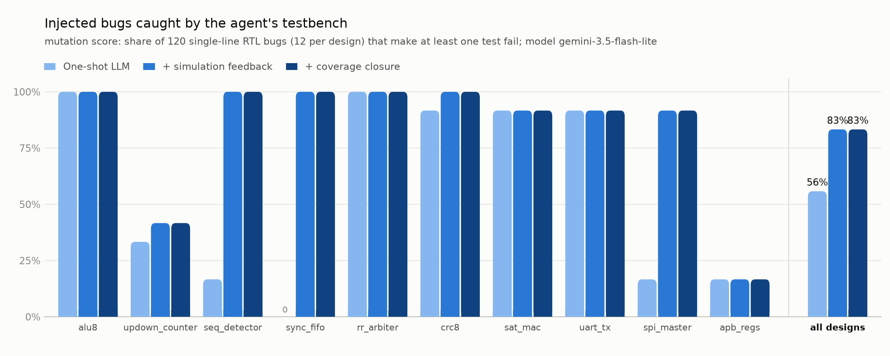

DVAgent benchmark report
Model gemini-3.5-flash-lite via gemini · started 2026-10-19 18:27:00 · 10 designs · 120 injected bugs

Per design
| Design | Level | Passes on correct RTL 1-shot / final | Coverage 1-shot / final | Bugs caught 1-shot / +feedback / final | Debug line found / fixed | LLM calls | False alarms |
|---|---|---|---|---|---|---|---|
| alu8 | easy | yes 4/4 / yes 4/4 | 100.0% / 100.0% | 12 / 12 / 12 of 12 | 4/4 / 4/4 | 5 | 0 |
| updown_counter | easy | no 1/6 / no 3/6 | 57.1% / 100.0% | 4 / 5 / 5 of 12 | 4/4 / 3/4 | 14 | 0 |
| seq_detector | easy | no 1/5 / yes 5/5 | 33.3% / 100.0% | 2 / 12 / 12 of 12 | 3/4 / 4/4 | 8 | 0 |
| sync_fifo | medium | no 0/0 / yes 5/5 | n/a / 100.0% | 0 / 12 / 12 of 12 | 4/4 / 4/4 | 7 | 0 |
| rr_arbiter | medium | yes 5/5 / yes 5/5 | 100.0% / 100.0% | 12 / 12 / 12 of 12 | 3/4 / 3/4 | 7 | 0 |
| crc8 | medium | no 1/5 / yes 5/5 | 83.3% / 100.0% | 11 / 12 / 12 of 12 | 4/4 / 4/4 | 6 | 0 |
| sat_mac | medium | yes 5/5 / yes 5/5 | 100.0% / 100.0% | 11 / 11 / 11 of 12 | 4/4 / 4/4 | 5 | 0 |
| uart_tx | hard | yes 6/6 / yes 6/6 | 100.0% / 100.0% | 11 / 11 / 11 of 12 | 3/4 / 3/4 | 7 | 0 |
| spi_master | hard | no 2/4 / no 3/4 | 91.7% / 91.7% | 2 / 11 / 11 of 12 | 3/4 / 3/4 | 15 | 0 |
| apb_regs | hard | no 1/4 / no 2/4 | 92.3% / 92.3% | 2 / 2 / 2 of 12 | 2/2 / 2/2 | 10 | 0 |
alu8
| Step | Action | Result on the correct design | Coverage | Agent's diagnosis |
|---|---|---|---|---|
| 0 | generate | pass (4/4 tests) | 100.0% |
Final testbench (tb_00.py)
"""
Verification Plan for alu8:
1. Combinational verification model:
- Python reference model that precisely mirrors the specification for all 8 operations (0 to 7).
2. Exhaustive corner-case checks:
- ADD: zero inputs, max inputs, carry generation, overflow cases (positive+positive->negative, negative+negative->positive).
- SUB: zero inputs, equal inputs, borrow generation (a < b), overflow cases (positive-negative->negative, negative-positive->positive).
- Bitwise operations (AND, OR, XOR): pattern checks, mask operations, all zeros, all ones.
- Shifts (SHL, SHR): shift amounts s from 0 to 7, verify shifted-out bits (carry) and results.
- SLT (Signed Less Than): negative vs positive, positive vs negative, equal signed numbers, boundary values.
3. Zero and Negative flags:
- Verify `zero` is active only when `y == 0`.
- Verify `negative` matches `y[7]`.
4. Constrained-random verification:
- Apply thousands of random test vectors across all operations using a fixed seed (`random.Random(1)`).
"""
import cocotb
from cocotb.triggers import Timer
import random
class ALU8RefModel:
def step(self, a, b, op):
# Ensure values are within 8-bit unsigned
a_u = a & 0xFF
b_u = b & 0xFF
# Signed 8-bit interpretations (two's complement)
a_s = a_u if a_u < 128 else a_u - 256
b_s = b_u if b_u < 128 else b_u - 256
s = b_u & 0x7
carry = 0
overflow = 0
y = 0
if op == 0: # ADD
full_sum = a_u + b_u
y = full_sum & 0xFF
carry = 1 if full_sum > 255 else 0
# Overflow: same sign for a and b, different sign for y
y_s = y if y < 128 else y - 256
if (a_s >= 0 and b_s >= 0 and y_s < 0) or (a_s < 0 and b_s < 0 and y_s >= 0):
overflow = 1
elif op == 1: # SUB
full_sub = a_u - b_u
y = full_sub & 0xFF
carry = 1 if a_u < b_u else 0
# Overflow: different signs for a and b, sign of y differs from a
y_s = y if y < 128 else y - 256
if (a_s >= 0 and b_s < 0 and y_s < 0) or (a_s < 0 and b_s >= 0 and y_s >= 0):
overflow = 1
elif op == 2: # AND
y = (a_u & b_u) & 0xFF
carry = 0
overflow = 0
elif op == 3: # OR
y = (a_u | b_u) & 0xFF
carry = 0
overflow = 0
elif op == 4: # XOR
y = (a_u ^ b_u) & 0xFF
carry = 0
overflow = 0
elif op == 5: # SHL
if s == 0:
y = a_u
carry = 0
else:
y = (a_u << s) & 0xFF
# last bit shifted out: bit a[8 - s]
carry = (a_u >> (8 - s)) & 1
overflow = 0
elif op == 6: # SHR
if s == 0:
y = a_u
carry = 0
else:
y = (a_u >> s) & 0xFF
# last bit shifted out: bit a[s - 1]
carry = (a_u >> (s - 1)) & 1
overflow = 0
elif op == 7: # SLT
y = 1 if a_s < b_s else 0
carry = 0
overflow = 0
zero = 1 if y == 0 else 0
negative = 1 if (y & 0x80) else 0
return y, carry, overflow, zero, negative
async def drive_and_check(dut, a, b, op, ref_model):
dut.a.value = a
dut.b.value = b
dut.op.value = op
# Combinational settling delay
await Timer(1, units="ns")
exp_y, exp_carry, exp_overflow, exp_zero, exp_negative = ref_model.step(a, b, op)
got_y = int(dut.y.value)
got_carry = int(dut.carry.value)
got_overflow = int(dut.overflow.value)
got_zero = int(dut.zero.value)
got_negative = int(dut.negative.value)
assert got_y == exp_y, f"Mismatch on OP {op} (a={a}, b={b}): y got {got_y}, expected {exp_y}"
assert got_carry == exp_carry, f"Mismatch on OP {op} (a={a}, b={b}): carry got {got_carry}, expected {exp_carry}"
assert got_overflow == exp_overflow, f"Mismatch on OP {op} (a={a}, b={b}): overflow got {got_overflow}, expected {exp_overflow}"
assert got_zero == exp_zero, f"Mismatch on OP {op} (a={a}, b={b}): zero got {got_zero}, expected {exp_zero}"
assert got_negative == exp_negative, f"Mismatch on OP {op} (a={a}, b={b}): negative got {got_negative}, expected {exp_negative}"
@cocotb.test()
async def test_alu_directed_corner_cases(dut):
"""Test specific corner cases for all operations."""
ref = ALU8RefModel()
corner_values = [0x00, 0x01, 0x7F, 0x80, 0xFF, 0x55, 0xAA]
for op in range(8):
for a in corner_values:
for b in corner_values:
await drive_and_check(dut, a, b, op, ref)
@cocotb.test()
async def test_alu_shift_edge_cases(dut):
"""Specifically test shift operations (SHL, SHR) with various shift amounts (s from 0 to 7)."""
ref = ALU8RefModel()
test_patterns = [0x01, 0x80, 0xAA, 0x55, 0xFF, 0x0F, 0xF0]
for op in [5, 6]:
for a in test_patterns:
for b_val in range(8):
await drive_and_check(dut, a, b_val, op, ref)
@cocotb.test()
async def test_alu_signed_comparison(dut):
"""Test SLT (Signed Less Than) thoroughly with positive and negative numbers."""
ref = ALU8RefModel()
# Test cases covering negative/positive boundaries
signed_vals = [-128, -127, -1, 0, 1, 126, 127]
for val_a in signed_vals:
for val_b in signed_vals:
# Convert to unsigned 8-bit for inputs
a = val_a & 0xFF
b = val_b & 0xFF
await drive_and_check(dut, a, b, 7, ref)
@cocotb.test()
async def test_alu_random(dut):
"""Run constrained-random tests across all operations."""
ref = ALU8RefModel()
rng = random.Random(1)
for _ in range(3000):
a = rng.randint(0, 255)
b = rng.randint(0, 255)
op = rng.randint(0, 7)
await drive_and_check(dut, a, b, op, ref)
Bug alu8_m000: '+' replaced by '-' (line 13) — fixed
Injected: wire [8:0] sum = {1'b0, a} + {1'b0, b}; → wire [8:0] sum = {1'b0, a} - {1'b0, b};
Agent's guesses for the faulty line: [13] · attempts: 1
Attempt 1: Line 13 defines 'sum' using subtraction ({1'b0, a} - {1'b0, b}) instead of addition ({1'b0, a} + {1'b0, b}), which breaks the ADD operation by performing a subtraction instead.wire [8:0] sum = {1'b0, a} + {1'b0, b};
Bug alu8_m001: '|' replaced by '&' (line 33) — fixed
Injected: 3'd3: y = a | b; // OR → 3'd3: y = a & b; // OR
Agent's guesses for the faulty line: [33] · attempts: 1
Attempt 1: OP 3 is OR, but line 33 implements AND (`a & b`) instead of OR (`a | b`), breaking the specification for the OR operation.3'd3: y = a | b; // OR
Bug alu8_m003: '&&' replaced by '||' (line 30) — fixed
Injected: overflow = (a[7] != b[7]) && (diff[7] != a[7]); → overflow = (a[7] != b[7]) || (diff[7] != a[7]);
Agent's guesses for the faulty line: [30] · attempts: 1
Attempt 1: For SUB (op 1), the overflow condition is incorrect. It currently uses a logical OR `(a[7] != b[7]) || (diff[7] != a[7])`, but signed overflow for subtraction occurs when `a` and `b` have *different* sign bits and the sign bit of `y` differs from `a`, which corresponds to `(a[7] != b[7]) && (diff[7] != a[7])` according to the specification.overflow = (a[7] != b[7]) && (diff[7] != a[7]);
Bug alu8_m004: '<' replaced by '<=' (line 37) — fixed
Injected: default: y = {7'd0, $signed(a) < $signed(b)}; // SLT (signed) → default: y = {7'd0, $signed(a) <= $signed(b)}; // SLT (signed)
Agent's guesses for the faulty line: [37] · attempts: 1
Attempt 1: Line 37 uses `<=` (less-than-or-equal) instead of `<` (strictly less than) for the SLT (Signed Less Than) operation, causing `a < b` to evaluate incorrectly as true when `a == b` (e.g., `a=0, b=0` and `a=128, b=128`), violating the SLT specification.default: y = {7'd0, $signed(a) < $signed(b)}; // SLT (signed)
updown_counter
| Step | Action | Result on the correct design | Coverage | Agent's diagnosis |
|---|---|---|---|---|
| 0 | generate | fail (1/6 tests) | ||
| 1 | fix | fail (3/6 tests) | [testbench] The reference model evaluated the combinatorial output `zero` based on the old state before the clock edge instead of the updated registered `self.count` state. | |
| 2 | fix | fail (3/6 tests) | [testbench] The testbench reference model incorrectly defined terminal count (`tc`) when `count` already exceeds `max_val` due to a lowered `max_val`, or during wrap conditions where the reference model's `tc` expression didn't match the DUT's combinational logic for `tc` when `count >= max_val` or `count == 0` | |
| 3 | fix | fail (3/6 tests) | [testbench] The reference model evaluated `tc` assuming it should be 0 when `count == 0` during down-counting or when `count >= max_val` during up-counting, whereas the specification states `tc` equals 1 when the *next* enabled count step will wrap (which happens when `count == 0` for down-counting and `count > | |
| 4 | fix | fail (3/6 tests) | [testbench] The reference model evaluated `tc` using the state *after* the clock edge rather than the current state before the edge, and the reference model's `tc` formula was missing the condition for when `count > max_val` during up counting. | |
| 4 | fix | — | [testbench] The testbench reference model incorrectly computes `tc` when `en` is low (en=0), requiring `en` to be true for `tc` to be asserted. However, according to the specification and the DUT, `tc` depends only on the current inputs (`en`, `load`, `up`, `max_val`) and `count`, where `tc` = 1 when the next e | |
| 4 | fix | — | [testbench] The reference model incorrectly required `en` to be 1 for `tc` to be asserted, but the DUT asserts `tc` combinational from inputs and count whenever a wrap would occur on the next enabled step (`en` and not `load` and `(up & (count >= max_val) | (~up & (count == 0)))`). Wait, looking at the spec: 't | |
| 5 | fix | fail (3/6 tests) | [testbench] The testbench reference model incorrectly set `tc = 0` when `en=0`, but the DUT's combinational `tc` logic evaluates based on `en=1` and `load=0` regardless of whether `en` is actually asserted in the current test cycle, or the reference model's `tc` check fails when `en=0` because the DUT computes |
Final testbench (tb_05.py)
"""
Verification Plan for updown_counter:
1. Asynchronous active-low reset: `rst_n` forces `count` to 0 immediately.
2. Synchronous load with clamping: `load` sets `count` to `min(d, max_val)`, taking priority over counting.
3. Up counting and wrapping: increments normally, wraps to 0 when `count >= max_val`.
4. Down counting and wrapping: decrements normally, wraps to `max_val` when `count == 0`.
5. Hold state: when `en` = 0 and `load` = 0, `count` remains unchanged.
6. Dynamic `max_val` changes: handles `max_val` alterations correctly, including when `count > max_val`.
7. Combinational outputs (`zero` and `tc`): checked against specification on every cycle using a reference model.
8. Constrained-random stimulus: long randomized test vectors to uncover corner cases.
"""
import random
import cocotb
from cocotb.clock import Clock
from cocotb.triggers import RisingEdge, FallingEdge, ReadOnly, Timer, ClockCycles
class CounterRefModel:
def __init__(self):
self.count = 0
def step(self, rst_n, en, up, load, d, max_val):
if not rst_n:
self.count = 0
zero = 1 if self.count == 0 else 0
tc = 0
return self.count, tc, zero
# Combinatorial outputs depend on current self.count and inputs *before* state update
if en and not load:
if up:
tc = 1 if self.count >= max_val else 0
else:
tc = 1 if self.count == 0 else 0
else:
tc = 0
# State update logic (priority order)
if load:
self.count = d if d <= max_val else max_val
elif en:
if up:
if self.count >= max_val:
self.count = 0
else:
self.count = self.count + 1
else:
if self.count == 0:
self.count = max_val
else:
self.count = self.count - 1
else:
# hold
pass
# Keep within 8 bits
self.count &= 0xFF
# zero depends on the newly updated count (registered output)
zero = 1 if self.count == 0 else 0
return self.count, tc, zero
async def run_cycle(dut, ref, rst_n, en, up, load, d, max_val):
# 1. Capture current inputs before falling edge
curr_rst_n = int(dut.rst_n.value) if dut.rst_n.value.is_resolvable else 0
curr_en = int(dut.en.value) if dut.en.value.is_resolvable else 0
curr_up = int(dut.up.value) if dut.up.value.is_resolvable else 0
curr_load = int(dut.load.value) if dut.load.value.is_resolvable else 0
curr_d = int(dut.d.value) if dut.d.value.is_resolvable else 0
curr_max = int(dut.max_val.value) if dut.max_val.value.is_resolvable else 0
# Get expected outputs for current cycle using model before update
expected_count, expected_tc, expected_zero = ref.step(
curr_rst_n, curr_en, curr_up, curr_load, curr_d, curr_max
)
# Check combinational outputs and previous cycle's registered count during ReadOnly phase
await ReadOnly()
got_count = int(dut.count.value)
got_tc = int(dut.tc.value)
got_zero = int(dut.zero.value)
assert got_count == expected_count, f"Count mismatch: got {got_count}, expected {expected_count}"
assert got_zero == expected_zero, f"Zero mismatch: got {got_zero}, expected {expected_zero}"
assert got_tc == expected_tc, f"TC mismatch: got {got_tc}, expected {expected_tc} (count={got_count}, max_val={curr_max}, en={curr_en}, up={curr_up}, load={curr_load})"
# 2. Drive new inputs at falling edge
await FallingEdge(dut.clk)
dut.rst_n.value = rst_n
dut.en.value = en
dut.up.value = up
dut.load.value = load
dut.d.value = d
dut.max_val.value = max_val
@cocotb.test()
async def test_reset_and_hold(dut):
"""Test asynchronous reset and hold behavior."""
cocotb.start_soon(Clock(dut.clk, 10, units="ns").start())
ref = CounterRefModel()
# Apply async reset
dut.rst_n.value = 0
dut.en.value = 0
dut.up.value = 1
dut.load.value = 0
dut.d.value = 50
dut.max_val.value = 10
await Timer(15, units="ns")
# Check reset state
await ReadOnly()
assert int(dut.count.value) == 0
assert int(dut.zero.value) == 1
# Release reset, en=0, load=0 -> should hold at 0
for _ in range(5):
await run_cycle(dut, ref, rst_n=1, en=0, up=1, load=0, d=0, max_val=10)
await ClockCycles(dut.clk, 1)
@cocotb.test()
async def test_load_and_clamping(dut):
"""Test synchronous load and max_val clamping."""
cocotb.start_soon(Clock(dut.clk, 10, units="ns").start())
ref = CounterRefModel()
# Reset
dut.rst_n.value = 0
dut.en.value = 0
dut.up.value = 1
dut.load.value = 0
dut.d.value = 0
dut.max_val.value = 100
await Timer(15, units="ns")
# Release reset and load valid value (d <= max_val)
await run_cycle(dut, ref, rst_n=1, en=0, up=1, load=1, d=45, max_val=100)
# Load with d > max_val (should clamp to max_val)
await run_cycle(dut, ref, rst_n=1, en=0, up=1, load=1, d=200, max_val=50)
# Load with max_val changing dynamically
await run_cycle(dut, ref, rst_n=1, en=0, up=1, load=1, d=30, max_val=20) # clamps to 20
await ClockCycles(dut.clk, 1)
@cocotb.test()
async def test_up_counting_and_wrapping(dut):
"""Test up counting and wrapping at max_val, plus tc generation."""
cocotb.start_soon(Clock(dut.clk, 10, units="ns").start())
ref = CounterRefModel()
# Reset
dut.rst_n.value = 0
dut.en.value = 0
dut.up.value = 1
dut.load.value = 0
dut.d.value = 0
dut.max_val.value = 5
await Timer(15, units="ns")
# Release reset and load 3
await run_cycle(dut, ref, rst_n=1, en=0, up=1, load=1, d=3, max_val=5)
# Enable up counting from 3 to 5, wrap to 0, then 1
# Count = 3, en=1, up=1, max=5 -> tc=0
await run_cycle(dut, ref, rst_n=1, en=1, up=1, load=0, d=0, max_val=5)
# Count = 4, en=1, up=1, max=5 -> tc=0
await run_cycle(dut, ref, rst_n=1, en=1, up=1, load=0, d=0, max_val=5)
# Count = 5, en=1, up=1, max=5 -> tc should be 1 (about to wrap)
await run_cycle(dut, ref, rst_n=1, en=1, up=1, load=0, d=0, max_val=5)
# Count wraps to 0
await run_cycle(dut, ref, rst_n=1, en=1, up=1, load=0, d=0, max_val=5)
# Count = 1
await run_cycle(dut, ref, rst_n=1, en=0, up=1, load=0, d=0, max_val=5)
await ClockCycles(dut.clk, 1)
@cocotb.test()
async def test_down_counting_and_wrapping(dut):
"""Test down counting and wrapping to max_val when count == 0."""
cocotb.start_soon(Clock(dut.clk, 10, units="ns").start())
ref = CounterRefModel()
# Reset
dut.rst_n.value = 0
dut.en.value = 0
dut.up.value = 0
dut.load.value = 0
dut.d.value = 0
dut.max_val.value = 3
await Timer(15, units="ns")
# Load 2
await run_cycle(dut, ref, rst_n=1, en=0, up=0, load=1, d=2, max_val=3)
# Count = 2, down count to 0, wrap to max_val (3)
await run_cycle(dut, ref, rst_n=1, en=1, up=0, load=0, d=0, max_val=3) # count -> 1
await run_cycle(dut, ref, rst_n=1, en=1, up=0, load=0, d=0, max_val=3) # count -> 0, tc should be 1
await run_cycle(dut, ref, rst_n=1, en=1, up=0, load=0, d=0, max_val=3) # count wraps to 3
await run_cycle(dut, ref, rst_n=1, en=0, up=0, load=0, d=0, max_val=3) # hold at 3
await ClockCycles(dut.clk, 1)
@cocotb.test()
async def test_dynamic_max_val_overflow(dut):
"""Test lowering max_val below current count and subsequent counting up."""
cocotb.start_soon(Clock(dut.clk, 10, units="ns").start())
ref = CounterRefModel()
# Reset
dut.rst_n.value = 0
dut.en.value = 0
dut.up.value = 1
dut.load.value = 0
dut.d.value = 0
dut.max_val.value = 10
await Timer(15, units="ns")
# Load 8
await run_cycle(dut, ref, rst_n=1, en=0, up=1, load=1, d=8, max_val=10)
# Lower max_val to 5 while count is 8 (count > max_val)
await run_cycle(dut, ref, rst_n=1, en=0, up=1, load=0, d=0, max_val=5)
# Enable up counting: since count (8) >= max_val (5), next step should wrap to 0 immediately
await run_cycle(dut, ref, rst_n=1, en=1, up=1, load=0, d=0, max_val=5)
await ClockCycles(dut.clk, 1)
@cocotb.test()
async def test_constrained_random(dut):
"""Constrained-random verification test over multiple cycles."""
cocotb.start_soon(Clock(dut.clk, 10, units="ns").start())
ref = CounterRefModel()
rng = random.Random(42)
# Reset
dut.rst_n.value = 0
dut.en.value = 0
dut.up.value = 0
dut.load.value = 0
dut.d.value = 0
dut.max_val.value = 10
await Timer(15, units="ns")
for _ in range(1500):
rst_n = rng.choices([0, 1], weights=[1, 99])[0] # rare reset
en = rng.choice([0, 1])
up = rng.choice([0, 1])
load = rng.choices([0, 1], weights=[85, 15])[0]
d = rng.randint(0, 255)
max_val = rng.randint(1, 255)
await run_cycle(dut, ref, rst_n, en, up, load, d, max_val)
await ClockCycles(dut.clk, 5)
Bug updown_counter_m001: condition (!rst_n) inverted (line 16) — fixed
Injected: if (!rst_n) begin → if (!(!rst_n)) begin
Agent's guesses for the faulty line: [16] · attempts: 1
Attempt 1: The asynchronous reset condition uses a double negation (!(!rst_n)) which evaluates to rst_n instead of !rst_n, causing the reset to be active-high instead of active-low, breaking the asynchronous reset specification.if (!rst_n) begin
Bug updown_counter_m003: assignment 'count <= 8'd0;' removed (line 17) — fixed
Injected: count <= 8'd0; → ;
Agent's guesses for the faulty line: [17] · attempts: 1
Attempt 1: The asynchronous reset block leaves count unassigned (empty semicolon) when rst_n is low, resulting in 'x' values on the count register. According to the specification, while rst_n is 0, count must be 0 immediately.count <= 8'd0;
Bug updown_counter_m007: condition (en) inverted (line 20) — not fixed
Injected: end else if (en) begin → end else if (!(en)) begin
Agent's guesses for the faulty line: [20, 20, 20] · attempts: 3
Attempt 1: Line 20 checks `else if (!(en))` instead of `else if (en)`, which causes the counter to execute up/down counting when `en` is low and hold when `en` is high, violating the count enable (`en`) specification.} else if (en) begin
Attempt 2: Line 20 checks `else if (!(en))`, which causes the counter to only increment, decrement, or wrap when `en` is 0 (disabled), instead of counting when `en` is 1 (enabled). This violates the requirement that counting occurs when `en` is active.} else if (en) begin
Attempt 3: Line 20 checks `else if (!(en))`, which causes the counter to only increment, decrement, or wrap when `en` is 0 (disabled), violating the specification that counting occurs when `en` is 1.} else if (en) begin
Bug updown_counter_m008: constant 8'd0 changed to 8'd1 (line 17) — fixed
Injected: count <= 8'd0; → count <= 8'd1;
Agent's guesses for the faulty line: [17] · attempts: 1
Attempt 1: The asynchronous reset sets `count` to `8'd1` instead of `8'd0`, violating the specification requirement that `count` is 0 while `rst_n` is 0.count <= 8'd0;
seq_detector
| Step | Action | Result on the correct design | Coverage | Agent's diagnosis |
|---|---|---|---|---|
| 0 | generate | fail (1/5 tests) | ||
| 1 | fix | pass (5/5 tests) | 100.0% | [testbench] The helper function reset_dut leaves rst=0 inside a ReadOnly phase or right after a RisingEdge without waiting for FallingEdge, causing subsequent signal drives to occur during ReadOnly phase. |
Final testbench (tb_01.py)
"""
Verification Plan for seq_detector:
1. Reset behavior: Verify that 'rst' active-high clears 'match' and 'count' to 0 and resets state.
2. Din_valid gating: Verify that when 'din_valid' = 0, bits are ignored (don't affect matching or break sequences).
3. Basic pattern detection: Verify simple "1011" sequence detection and 'match' pulse generation (1 cycle).
4. Overlapping patterns: Verify that "1011011" correctly generates two matches.
5. Consecutive overlapping patterns: Verify "10111011" yields two matches.
6. Count saturation: Verify that 'count' increments correctly on each match and saturates at 255.
7. Random stimulus testing: Use a constrained-random bit stream with variable 'din_valid' toggling,
compared cycle-by-cycle against a Python reference model.
"""
import random
import cocotb
from cocotb.clock import Clock
from cocotb.triggers import RisingEdge, FallingEdge, ReadOnly, ClockCycles
class SeqDetectorRefModel:
def __init__(self):
self.state = 0 # number of matched bits in "1011" (0 to 3)
self.count = 0
self.match = 0
def step(self, rst, din, din_valid):
if rst:
self.state = 0
self.count = 0
self.match = 0
return self.match, self.count
# match is a registered output for one cycle
self.match = 0
if din_valid:
bit = din & 1
if self.state == 0:
if bit == 1:
self.state = 1
else:
self.state = 0
elif self.state == 1:
if bit == 0:
self.state = 2
else:
self.state = 1 # remaining in state 1 if bit is 1 (e.g. 11)
elif self.state == 2:
if bit == 1:
self.state = 3
else:
self.state = 0
elif self.state == 3:
if bit == 1:
# Match completed! Overlap: trailing '1' is the first bit of next occurrence
self.match = 1
if self.count < 255:
self.count += 1
self.state = 1
else:
if bit == 0:
self.state = 2
else:
self.state = 1
return self.match, self.count
async def reset_dut(dut):
await FallingEdge(dut.clk)
dut.rst.value = 1
dut.din.value = 0
dut.din_valid.value = 0
await RisingEdge(dut.clk)
await FallingEdge(dut.clk)
dut.rst.value = 0
@cocotb.test()
async def test_reset(dut):
"""Test reset clears outputs and internal state."""
cocotb.start_soon(Clock(dut.clk, 10, units="ns").start())
# Initialize
dut.rst.value = 1
dut.din.value = 0
dut.din_valid.value = 0
await ClockCycles(dut.clk, 2)
await ReadOnly()
assert int(dut.match.value) == 0, f"Match not 0 after reset: got {int(dut.match.value)}"
assert int(dut.count.value) == 0, f"Count not 0 after reset: got {int(dut.count.value)}"
@cocotb.test()
async def test_din_valid_gating(dut):
"""Test that din_valid=0 ignores inputs completely."""
cocotb.start_soon(Clock(dut.clk, 10, units="ns").start())
ref = SeqDetectorRefModel()
ref.step(1, 0, 0) # reset ref model
await reset_dut(dut)
# Send "1011" with din_valid=0 sprinkled around
stream = [
(1, 0), # ignored
(1, 1), # part of 1011 (state 1)
(0, 0), # ignored
(0, 1), # part of 1011 (state 2)
(1, 0), # ignored
(1, 1), # part of 1011 (state 3)
(1, 1), # completes 1011 -> match
]
for din, valid in stream:
await FallingEdge(dut.clk)
dut.din.value = din
dut.din_valid.value = valid
expected_match, expected_count = ref.step(0, din, valid)
await RisingEdge(dut.clk)
await ReadOnly()
assert int(dut.match.value) == expected_match, f"Match mismatch on stream element ({din}, valid={valid}). Expected {expected_match}, got {int(dut.match.value)}"
assert int(dut.count.value) == expected_count, f"Count mismatch on stream element ({din}, valid={valid}). Expected {expected_count}, got {int(dut.count.value)}"
@cocotb.test()
async def test_basic_and_overlapping(dut):
"""Test basic 1011 pattern and overlapping occurrences like 1011011."""
cocotb.start_soon(Clock(dut.clk, 10, units="ns").start())
ref = SeqDetectorRefModel()
ref.step(1, 0, 0)
await reset_dut(dut)
# "1011011"
bits = [1, 0, 1, 1, 0, 1, 1]
for b in bits:
await FallingEdge(dut.clk)
dut.din.value = b
dut.din_valid.value = 1
expected_match, expected_count = ref.step(0, b, 1)
await RisingEdge(dut.clk)
await ReadOnly()
assert int(dut.match.value) == expected_match, f"Match mismatch for bit {b}. Expected {expected_match}, got {int(dut.match.value)}"
assert int(dut.count.value) == expected_count, f"Count mismatch for bit {b}. Expected {expected_count}, got {int(dut.count.value)}"
@cocotb.test()
async def test_count_saturation(dut):
"""Test that count saturates at 255 and never wraps."""
cocotb.start_soon(Clock(dut.clk, 10, units="ns").start())
ref = SeqDetectorRefModel()
ref.step(1, 0, 0)
await reset_dut(dut)
# We need 260 matches. Each match can be achieved with "1011".
sequence = [1, 0, 1, 1] + [0, 1, 1] * 260
for idx, b in enumerate(sequence):
await FallingEdge(dut.clk)
dut.din.value = b
dut.din_valid.value = 1
expected_match, expected_count = ref.step(0, b, 1)
await RisingEdge(dut.clk)
await ReadOnly()
assert int(dut.match.value) == expected_match, f"Match mismatch at index {idx} (bit {b}). Expected {expected_match}, got {int(dut.match.value)}"
assert int(dut.count.value) == expected_count, f"Count mismatch at index {idx} (bit {b}). Expected {expected_count}, got {int(dut.count.value)}"
assert int(dut.count.value) == 255, f"Count did not saturate at 255, got {int(dut.count.value)}"
@cocotb.test()
async def test_constrained_random(dut):
"""Constrained-random test of bit streams and valid flags with reference model check."""
cocotb.start_soon(Clock(dut.clk, 10, units="ns").start())
ref = SeqDetectorRefModel()
ref.step(1, 0, 0)
await reset_dut(dut)
rng = random.Random(42)
# Run 5000 random cycles
for cycle in range(5000):
# Periodically reset to test reset robustness during random operation
if cycle == 2500:
await FallingEdge(dut.clk)
dut.rst.value = 1
dut.din.value = 0
dut.din_valid.value = 0
ref.step(1, 0, 0)
await RisingEdge(dut.clk)
await FallingEdge(dut.clk)
dut.rst.value = 0
continue
din = rng.choice([0, 1])
din_valid = rng.choices([0, 1], weights=[3, 7])[0] # 70% valid rate
await FallingEdge(dut.clk)
dut.din.value = din
dut.din_valid.value = din_valid
expected_match, expected_count = ref.step(0, din, din_valid)
await RisingEdge(dut.clk)
await ReadOnly()
assert int(dut.match.value) == expected_match, \
f"Cycle {cycle}: Match mismatch (din={din}, valid={din_valid}). Expected {expected_match}, got {int(dut.match.value)}"
assert int(dut.count.value) == expected_count, \
f"Cycle {cycle}: Count mismatch (din={din}, valid={din_valid}). Expected {expected_count}, got {int(dut.count.value)}"
Bug seq_detector_m000: '+' replaced by '-' (line 39) — fixed
Injected: count <= count + 8'd1; → count <= count - 8'd1;
Agent's guesses for the faulty line: [39] · attempts: 1
Attempt 1: Line 39 decrements the count instead of incrementing it when a match occurs, violating the specification requirement that 'count increments by 1 at the same edge where match is set to 1'.count <= count + 8'd1;
Bug seq_detector_m001: condition (rst) inverted (line 30) — fixed
Injected: if (rst) begin → if (!(rst)) begin
Agent's guesses for the faulty line: [25, 25, 30] · attempts: 3
Attempt 1: The default case in the state transition table incorrectly transitions to S2 (state for '10') when din is 0, instead of returning to S0 when the pattern breaks, or properly handling other states. Specifically, the default case is hit for state S3 (value 2'd3), so when receiving a 0 in state S3 (i.e., failing '101'), it goes to S2 instead of S0.default: next = din ? S1 : S0;
Attempt 2: The default case in the next-state logic uses `din ? S1 : S2`, which maps the S3 state when `din=0` to S2 (incorrectly transitioning to '10' instead of returning to S0 or S1). This breaks the state machine sequence for '1011' detection, causing state S3 to misbehave and preventing matches from being detected.default: next = din ? S1 : S0;
Attempt 3: The synchronous reset condition checks `if (!(rst))`, but `rst` is defined as active-high (`rst = 1` asserts reset). Therefore, `!(rst)` evaluates to 0 when reset is asserted, so the design never enters the reset branch, leaving internal signals like `count` uninitialized (`x`) and preventing state machine initialization.if (rst) begin
Bug seq_detector_m002: constant 8'hFF changed to 8'hFE (line 38) — fixed
Injected: if (hit && count != 8'hFF) → if (hit && count != 8'hFE)
Agent's guesses for the faulty line: [38] · attempts: 1
Attempt 1: Line 38 checks `count != 8'hFE` (which is 254) instead of `count != 8'hFF` (255), causing the count to stop incrementing at 254 instead of saturating at 255 as specified.if (hit && count != 8'hFF)
Bug seq_detector_m004: '&&' replaced by '||' (line 18) — fixed
Injected: wire hit = din_valid && (state == S3) && din; → wire hit = din_valid && (state == S3) || din;
Agent's guesses for the faulty line: [18] · attempts: 1
Attempt 1: Line 18 incorrectly computes the match/hit signal using a combinational expression `wire hit = din_valid && (state == S3) || din;` which ignores `din_valid` for the `din` term and incorrectly asserts `hit` whenever `din` is high. It should be `wire hit = din_valid && (state == S3) && din;`, ensuring the match requires `din_valid` and that the final received bit is `1` while in state S3.wire hit = din_valid && (state == S3) && din;
sync_fifo
| Step | Action | Result on the correct design | Coverage | Agent's diagnosis |
|---|---|---|---|---|
| 0 | generate | tb_error | ||
| 1 | fix | fail (0/5 tests) | [testbench] A syntax error on line 121 ('await apply_res_and_model = None') was introduced accidentally during testbench editing. | |
| 2 | fix | pass (5/5 tests) | 100.0% | [testbench] The testbench attempts to assign a value to `dut.rst` immediately after an `await ReadOnly()` phase in `apply_reset` and across test cases, which violates cocotb's rule that signals cannot be scheduled for write during a read-only phase. |
Final testbench (tb_02.py)
"""
Verification Plan for sync_fifo:
1. Reset behavior: Verify FIFO becomes empty (count=0, empty=1, full=0, almost_full=0),
and error flags (overflow, underflow) are cleared.
2. Basic push and pop: Push data into an empty FIFO, verify dout reflects the pushed data
immediately (first-word fall-through), count increments, and empty goes low.
3. Simultaneous push and pop: Test pushing and popping at the same time when empty,
when partially full, and when full. Verify count behavior and data correctness.
4. Overflow condition: Try pushing into a full FIFO (without simultaneous pop), verify push
is rejected and sticky `overflow` flag asserts and stays asserted.
5. Underflow condition: Try popping from an empty FIFO, verify pop is rejected and sticky
`underflow` flag asserts and stays asserted.
6. Almost full flag: Verify `almost_full` asserts correctly when count >= 6 and deasserts below 6.
7. Constrained-random sequence: Run a randomized test with mixed push/pop requests, validating
against a Python reference model on every single clock edge.
"""
import cocotb
from cocotb.clock import Clock
from cocotb.triggers import RisingEdge, FallingEdge, ReadOnly, Timer, ClockCycles
import random
class FifoRefModel:
def __init__(self, depth=8):
self.depth = depth
self.buffer = []
self.count = 0
self.overflow = 0
self.underflow = 0
def step(self, rst, push, din, pop):
if rst:
self.buffer = []
self.count = 0
self.overflow = 0
self.underflow = 0
return
# Determine if pop is accepted
pop_accepted = pop and (self.count > 0)
if pop and not pop_accepted:
self.underflow = 1
# Determine if push is accepted
# A full FIFO can accept a push if a pop is also accepted in the same cycle
full = (self.count == self.depth)
push_accepted = push and (not full or pop_accepted)
if push and not push_accepted:
self.overflow = 1
# Execute operations
if pop_accepted:
self.buffer.pop(0)
self.count -= 1
if push_accepted:
self.buffer.append(din & 0xFF)
self.count += 1
@property
def empty(self):
return 1 if self.count == 0 else 0
@property
def full(self):
return 1 if self.count == self.depth else 0
@property
def almost_full(self):
return 1 if self.count >= 6 else 0
@property
def dout(self):
if self.empty:
return 0 # Unspecified in spec, but DUT/model needs a value
return self.buffer[0]
async def apply_reset(dut):
dut.rst.value = 1
dut.push.value = 0
dut.din.value = 0
dut.pop.value = 0
await FallingEdge(dut.clk)
await RisingEdge(dut.clk)
await FallingEdge(dut.clk)
dut.rst.value = 0
@cocotb.test()
async def test_reset(dut):
"""Test reset behavior and initial state."""
cocotb.start_soon(Clock(dut.clk, 10, units="ns").start())
# Apply reset
dut.rst.value = 1
dut.push.value = 1
dut.din.value = 0xAA
dut.pop.value = 1
await FallingEdge(dut.clk)
await RisingEdge(dut.clk)
dut.rst.value = 0
await ReadOnly()
assert int(dut.count.value) == 0, f"Expected count=0 after reset, got {int(dut.count.value)}"
assert int(dut.empty.value) == 1, f"Expected empty=1 after reset, got {int(dut.empty.value)}"
assert int(dut.full.value) == 0, f"Expected full=0 after reset, got {int(dut.full.value)}"
assert int(dut.almost_full.value) == 0, f"Expected almost_full=0 after reset, got {int(dut.almost_full.value)}"
assert int(dut.overflow.value) == 0, f"Expected overflow=0 after reset, got {int(dut.overflow.value)}"
assert int(dut.underflow.value) == 0, f"Expected underflow=0 after reset, got {int(dut.underflow.value)}"
@cocotb.test()
async def test_basic_push_pop(dut):
"""Test basic pushing, first-word fall-through, popping, and count tracking."""
cocotb.start_soon(Clock(dut.clk, 10, units="ns").start())
ref = FifoRefModel()
await apply_reset(dut)
ref.step(rst=1, push=0, din=0, pop=0)
ref.step(rst=0, push=0, din=0, pop=0) # account for falling edge reset release
test_data = [0x10, 0x20, 0x30, 0x40]
# Push data items one by one
for val in test_data:
await FallingEdge(dut.clk)
dut.rst.value = 0
dut.push.value = 1
dut.din.value = val
dut.pop.value = 0
ref.step(rst=0, push=1, din=val, pop=0)
await RisingEdge(dut.clk)
await ReadOnly()
assert int(dut.count.value) == ref.count, f"Count mismatch: got {int(dut.count.value)}, expected {ref.count}"
assert int(dut.empty.value) == ref.empty, f"Empty mismatch"
assert int(dut.full.value) == ref.full, f"Full mismatch"
assert int(dut.dout.value) == ref.dout, f"Dout mismatch: got {int(dut.dout.value):02x}, expected {ref.dout:02x}"
# Pop data items one by one
for expected_val in test_data:
# Check dout before pop (first-word fall-through)
await ReadOnly()
assert int(dut.dout.value) == ref.dout, f"Fall-through dout mismatch before pop"
await FallingEdge(dut.clk)
dut.push.value = 0
dut.pop.value = 1
ref.step(rst=0, push=0, din=0, pop=1)
await RisingEdge(dut.clk)
await ReadOnly()
assert int(dut.count.value) == ref.count, f"Count mismatch after pop: got {int(dut.count.value)}, expected {ref.count}"
assert int(dut.empty.value) == ref.empty, f"Empty mismatch after pop"
@cocotb.test()
async def test_overflow_underflow(dut):
"""Test sticky overflow and underflow conditions."""
cocotb.start_soon(Clock(dut.clk, 10, units="ns").start())
ref = FifoRefModel()
await apply_reset(dut)
ref.step(rst=1, push=0, din=0, pop=0)
ref.step(rst=0, push=0, din=0, pop=0)
# Trigger Underflow first by popping empty FIFO
await FallingEdge(dut.clk)
dut.rst.value = 0
dut.push.value = 0
dut.pop.value = 1
ref.step(rst=0, push=0, din=0, pop=1)
await RisingEdge(dut.clk)
await ReadOnly()
assert int(dut.underflow.value) == 1, "Underflow flag should be set"
assert int(dut.overflow.value) == 0, "Overflow flag should not be set yet"
# Fill the FIFO to capacity (8 items)
for i in range(8):
await FallingEdge(dut.clk)
dut.push.value = 1
dut.din.value = i
dut.pop.value = 0
ref.step(rst=0, push=1, din=i, pop=0)
await RisingEdge(dut.clk)
await ReadOnly()
assert int(dut.full.value) == 1, "FIFO should be full"
assert int(dut.count.value) == 8, "Count should be 8"
# Try pushing into full FIFO -> should cause Overflow
await FallingEdge(dut.clk)
dut.push.value = 1
dut.din.value = 0xFF
dut.pop.value = 0
ref.step(rst=0, push=1, din=0xFF, pop=0)
await RisingEdge(dut.clk)
await ReadOnly()
assert int(dut.overflow.value) == 1, "Overflow flag should be set"
assert int(dut.underflow.value) == 1, "Underflow flag should remain set (sticky)"
assert int(dut.count.value) == 8, "Count should remain 8"
@cocotb.test()
async def test_simultaneous_push_pop(dut):
"""Test simultaneous push and pop operations across empty, partial, and full states."""
cocotb.start_soon(Clock(dut.clk, 10, units="ns").start())
ref = FifoRefModel()
await apply_reset(dut)
ref.step(rst=1, push=0, din=0, pop=0)
ref.step(rst=0, push=0, din=0, pop=0)
# 1. Push + Pop on empty FIFO (pop ignored, push accepted)
await FallingEdge(dut.clk)
dut.rst.value = 0
dut.push.value = 1
dut.din.value = 0x55
dut.pop.value = 1
ref.step(rst=0, push=1, din=0x55, pop=1)
await RisingEdge(dut.clk)
await ReadOnly()
assert int(dut.count.value) == ref.count, f"Count mismatch: got {int(dut.count.value)}, expected {ref.count}"
assert int(dut.dout.value) == ref.dout, f"Dout mismatch: got {int(dut.dout.value)}, expected {ref.dout}"
# Fill FIFO up to 8 items
for i in range(7):
await FallingEdge(dut.clk)
dut.push.value = 1
dut.din.value = 0x60 + i
dut.pop.value = 0
ref.step(rst=0, push=1, din=0x60 + i, pop=0)
await RisingEdge(dut.clk)
await ReadOnly()
assert int(dut.full.value) == 1, "FIFO should be full (count=8)"
# 2. Push + Pop on full FIFO (both accepted, count stays 8)
await FallingEdge(dut.clk)
dut.push.value = 1
dut.din.value = 0x99
dut.pop.value = 1
ref.step(rst=0, push=1, din=0x99, pop=1)
await RisingEdge(dut.clk)
await ReadOnly()
assert int(dut.count.value) == 8, f"Count should stay 8 on simultaneous push/pop when full, got {int(dut.count.value)}"
assert int(dut.full.value) == 1, "FIFO should remain full"
assert int(dut.dout.value) == ref.dout, "Oldest element should have advanced"
@cocotb.test()
async def test_almost_full_and_random(dut):
"""Constrained-random test checking almost_full flag and overall state tracking."""
cocotb.start_soon(Clock(dut.clk, 10, units="ns").start())
ref = FifoRefModel()
await apply_reset(dut)
ref.step(rst=1, push=0, din=0, pop=0)
ref.step(rst=0, push=0, din=0, pop=0)
rng = random.Random(42)
for cycle in range(1500):
push = rng.choice([0, 1, 1]) # slightly higher weight to push
pop = rng.choice([0, 1])
din = rng.randint(0, 255)
await FallingEdge(dut.clk)
dut.rst.value = 0
dut.push.value = push
dut.din.value = din
dut.pop.value = pop
ref.step(rst=0, push=push, din=din, pop=pop)
await RisingEdge(dut.clk)
await ReadOnly()
# Check all outputs against reference model on every cycle
assert int(dut.count.value) == ref.count, f"[Cycle {cycle}] Count mismatch: got {int(dut.count.value)}, expected {ref.count}"
assert int(dut.empty.value) == ref.empty, f"[Cycle {cycle}] Empty mismatch: got {int(dut.empty.value)}, expected {ref.empty}"
assert int(dut.full.value) == ref.full, f"[Cycle {cycle}] Full mismatch: got {int(dut.full.value)}, expected {ref.full}"
assert int(dut.almost_full.value) == ref.almost_full, f"[Cycle {cycle}] Almost full mismatch: got {int(dut.almost_full.value)}, expected {ref.almost_full}"
assert int(dut.overflow.value) == ref.overflow, f"[Cycle {cycle}] Overflow mismatch: got {int(dut.overflow.value)}, expected {ref.overflow}"
assert int(dut.underflow.value) == ref.underflow, f"[Cycle {cycle}] Underflow mismatch: got {int(dut.underflow.value)}, expected {ref.underflow}"
if not ref.empty:
assert int(dut.dout.value) == ref.dout, f"[Cycle {cycle}] Dout mismatch: got {int(dut.dout.value):02x}, expected {ref.dout:02x}"
Bug sync_fifo_m000: '+' replaced by '-' (line 47) — fixed
Injected: count <= count + 4'd1; → count <= count - 4'd1;
Agent's guesses for the faulty line: [47] · attempts: 1
Attempt 1: Line 47 incorrectly decrements count instead of incrementing it when only a push is accepted, violating the count update specification ('count increases by 1 when only a push is accepted').count <= count + 4'd1;
Bug sync_fifo_m001: condition (push && !do_push) inverted (line 50) — fixed
Injected: if (push && !do_push) → if (!(push && !do_push))
Agent's guesses for the faulty line: [50] · attempts: 1
Attempt 1: Line 50 uses `!(push && !do_push)` which incorrectly sets `overflow` to 1 whenever `push` is low and `do_push` is false, instead of checking if a push was requested (`push`) but rejected (`!do_push`). This breaks the rule: 'overflow becomes 1 when push = 1 but the push is rejected.'if (push && !do_push)
Bug sync_fifo_m002: constant 4'd8 changed to 4'd9 (line 24) — fixed
Injected: assign full = (count == 4'd8); → assign full = (count == 4'd9);
Agent's guesses for the faulty line: [24] · attempts: 1
Attempt 1: Line 24 checks `count == 4'd9` for the `full` flag, but the FIFO depth is 8 and `count` reaches a maximum value of 8. Therefore `full` never asserts when the FIFO becomes full (count == 8).assign full = (count == 4'd8);
Bug sync_fifo_m003: assignment 'underflow <= 1'b0;' removed (line 40) — fixed
Injected: underflow <= 1'b0; → ;
Agent's guesses for the faulty line: [40] · attempts: 1
Attempt 1: A stray semicolon on line 40 leaves 'underflow' unassigned during reset, resulting in 'x' during the reset test and failing assertions.underflow <= 1'b0;
rr_arbiter
| Step | Action | Result on the correct design | Coverage | Agent's diagnosis |
|---|---|---|---|---|
| 0 | generate | pass (5/5 tests) | 100.0% |
Final testbench (tb_00.py)
"""
Verification Plan for rr_arbiter:
1. Reset Behavior: Verify that after reset, grant = 0, owner = 0, busy = 0, and internal 'last' = 3.
2. Single Requester: Verify that any single requester gets the grant and keeps it as long as req is high.
3. Round-Robin Ordering: Verify proper round-robin priority order (last + 1, last + 2, last + 3, last + 4 modulo 4) when multiple requests are active simultaneously.
4. Retention (Keep): Verify that an owner keeps the bus as long as its request remains high, even if higher priority requests appear.
5. Hand-Over: Verify seamless hand-over with no idle cycle when the current owner drops its request and another request is pending.
6. Drop to Idle: Verify that when all requests drop, grant goes to 0, busy goes to 0, while owner and last retain their values.
7. Constrained-Random Test: Drive randomized request patterns across multiple cycles and verify against the Python reference model.
"""
import random
import cocotb
from cocotb.clock import Clock
from cocotb.triggers import RisingEdge, FallingEdge, ReadOnly, Timer, ClockCycles
class RefModel:
def __init__(self):
self.last = 3
self.grant = 0
self.owner = 0
self.busy = 0
def step(self, rst, req):
if rst:
self.last = 3
self.grant = 0
self.owner = 0
self.busy = 0
return
# 1. Keep: if grant is non-zero and req[owner] == 1
keep = False
if self.grant != 0:
owner_bit = (self.grant >> self.owner) & 1
if owner_bit == 1 and ((req >> self.owner) & 1) == 1:
keep = True
if keep:
# Nothing changes for grant, owner, last
pass
else:
# 2. Arbitrate: search order (last+1, last+2, last+3, last+4) % 4
winner = None
for offset in range(1, 5):
idx = (self.last + offset) % 4
if (req >> idx) & 1:
winner = idx
break
if winner is not None:
self.owner = winner
self.last = winner
self.grant = 1 << winner
else:
# 3. No requester
self.grant = 0
# owner and last keep their values
self.busy = 1 if self.grant != 0 else 0
async def initialize(dut):
dut.rst.value = 1
dut.req.value = 0
await FallingEdge(dut.clk)
await RisingEdge(dut.clk)
dut.rst.value = 0
await ReadOnly()
@cocotb.test()
async def test_reset(dut):
"""Test reset conditions and initial state."""
cocotb.start_soon(Clock(dut.clk, 10, units="ns").start())
dut.rst.value = 1
dut.req.value = 0x5
await ClockCycles(dut.clk, 2)
await ReadOnly()
assert int(dut.grant.value) == 0, f"Expected grant=0 after reset, got {int(dut.grant.value)}"
assert int(dut.owner.value) == 0, f"Expected owner=0 after reset, got {int(dut.owner.value)}"
assert int(dut.busy.value) == 0, f"Expected busy=0 after reset, got {int(dut.busy.value)}"
@cocotb.test()
async def test_single_requester(dut):
"""Test single requester behavior and bus retention."""
cocotb.start_soon(Clock(dut.clk, 10, units="ns").start())
ref = RefModel()
await initialize(dut)
# Request from requester 2
for req_val in [0x4, 0x4, 0x4, 0x0, 0x2, 0x2, 0x0]:
await FallingEdge(dut.clk)
dut.req.value = req_val
ref.step(0, req_val)
await RisingEdge(dut.clk)
await ReadOnly()
assert int(dut.grant.value) == ref.grant, f"req={req_val:04b}: expected grant={ref.grant:04b}, got {int(dut.grant.value):04b}"
assert int(dut.owner.value) == ref.owner, f"req={req_val:04b}: expected owner={ref.owner}, got {int(dut.owner.value)}"
assert int(dut.busy.value) == ref.busy, f"req={req_val:04b}: expected busy={ref.busy}, got {int(dut.busy.value)}"
@cocotb.test()
async def test_round_robin_order(dut):
"""Test round-robin priority order when multiple requesters are active."""
cocotb.start_soon(Clock(dut.clk, 10, units="ns").start())
ref = RefModel()
await initialize(dut)
# Assert all requests simultaneously: 0xF
# After reset, last = 3, so priority order should be 0, 1, 2, 3
# Cycle 1: req=0xF -> grants 0
# Cycle 2: req=0xF -> keeps 0 (req[0]==1)
# Let's drop req[0] to test round robin hand-over to 1, then 2, then 3
req_sequence = [0xF, 0xE, 0xC, 0x8, 0x0, 0xF, 0xF, 0xF, 0xF]
for req_val in req_sequence:
await FallingEdge(dut.clk)
dut.req.value = req_val
ref.step(0, req_val)
await RisingEdge(dut.clk)
await ReadOnly()
assert int(dut.grant.value) == ref.grant, f"req={req_val:04b}: expected grant={ref.grant:04b}, got {int(dut.grant.value):04b}"
assert int(dut.owner.value) == ref.owner, f"req={req_val:04b}: expected owner={ref.owner}, got {int(dut.owner.value)}"
assert int(dut.busy.value) == ref.busy, f"req={req_val:04b}: expected busy={ref.busy}, got {int(dut.busy.value)}"
@cocotb.test()
async def test_retention_and_handover(dut):
"""Test keep condition vs new higher/lower priority requests."""
cocotb.start_soon(Clock(dut.clk, 10, units="ns").start())
ref = RefModel()
await initialize(dut)
# Sequence to test owner keeping bus even when other requests arrive
req_sequence = [
0x2, # req[1] -> grant 1
0x3, # req[1] and req[0] -> owner is 1, req[1] is high -> keep 1
0x1, # drop req[1], keep req[0] -> hand over to 0 immediately
0x1, # keep 0
0xD, # req[0], req[2], req[3] active, owner is 0. req[0] is high -> keep 0
0xC, # drop req[0], req[2], req[3] active, last=0 -> next is 1,2,3 -> grants 2 (since last=0, order is 1,2,3,0 -> index 2 is first set)
0x0 # drop all
]
for req_val in req_sequence:
await FallingEdge(dut.clk)
dut.req.value = req_val
ref.step(0, req_val)
await RisingEdge(dut.clk)
await ReadOnly()
assert int(dut.grant.value) == ref.grant, f"req={req_val:04b}: expected grant={ref.grant:04b}, got {int(dut.grant.value):04b}"
assert int(dut.owner.value) == ref.owner, f"req={req_val:04b}: expected owner={ref.owner}, got {int(dut.owner.value)}"
assert int(dut.busy.value) == ref.busy, f"req={req_val:04b}: expected busy={ref.busy}, got {int(dut.busy.value)}"
@cocotb.test()
async def test_constrained_random(dut):
"""Run constrained-random testing over 1000 cycles and check against reference model."""
cocotb.start_soon(Clock(dut.clk, 10, units="ns").start())
ref = RefModel()
await initialize(dut)
rng = random.Random(42)
for _ in range(1000):
req_val = rng.randint(0, 15)
rst_val = 1 if rng.random() < 0.02 else 0 # occasional random reset
await FallingEdge(dut.clk)
dut.req.value = req_val
dut.rst.value = rst_val
ref.step(rst_val, req_val)
await RisingEdge(dut.clk)
await ReadOnly()
assert int(dut.grant.value) == ref.grant, f"Random test fail: rst={rst_val}, req={req_val:04b}, expected grant={ref.grant:04b}, got {int(dut.grant.value):04b}"
assert int(dut.owner.value) == ref.owner, f"Random test fail: rst={rst_val}, req={req_val:04b}, expected owner={ref.owner}, got {int(dut.owner.value)}"
assert int(dut.busy.value) == ref.busy, f"Random test fail: rst={rst_val}, req={req_val:04b}, expected busy={ref.busy}, got {int(dut.busy.value)}"
Bug rr_arbiter_m000: '+' replaced by '-' (line 28) — fixed
Injected: pick = last + 2'd3; → pick = last - 2'd3;
Agent's guesses for the faulty line: [28] · attempts: 1
Attempt 1: Line 28 incorrectly subtracts 3 instead of adding 1 modulo 4 or using the standard offset for rot[2] (which corresponds to last + 3). Subtracting 3 breaks the round-robin priority order search (`last+1, last+2, last+3, last+4`).pick = last + 2'd3;
Bug rr_arbiter_m001: condition (rst) inverted (line 40) — fixed
Injected: if (rst) begin → if (!(rst)) begin
Agent's guesses for the faulty line: [40] · attempts: 1
Attempt 1: The active-high reset check uses `!(rst)` instead of `rst`, meaning the reset logic is active when `rst` is low and inactive when `rst` is high, breaking the synchronous active-high reset requirement.if (rst) begin
Bug rr_arbiter_m002: constant 1'b1 changed to 1'b0 (line 22) — fixed
Injected: found = 1'b1; → found = 1'b0;
Agent's guesses for the faulty line: [22] · attempts: 1
Attempt 1: The 'keep' signal condition uses 'busy && req[owner]', but when 'grant' is non-zero (so 'busy' is 1), the active requester is 'owner'. However, 'req[owner]' correctly checks the owner's request, but if 'grant' is 0, 'busy' is 0, so 'keep' is 0. Wait, looking at line 37: 'wire keep = busy && req[owner];' seems fine at first glance, but the bug is actually that when grant is 0, busy is 0, and therefore keep is 0. Let's check line 44: 'else if (!keep)'. When grant is 0 (idle), keep is 0, so it goes to arbitrate. But wait! Look at the pick logic: if none of rot bits are set, found is set to 1_b0 (found = 1'b1;
Bug rr_arbiter_m003: assignment 'grant <= 4'b0001 << pick;' removed (line 46) — not fixed
Injected: grant <= 4'b0001 << pick; → ;
Agent's guesses for the faulty line: [45, 45, 45] · attempts: 3
Attempt 1: When arbitrating and a valid new requester is found (found=1), the RTL leaves the grant signal unassigned or unchanged rather than updating it to the one-hot encoding of the new winner (`1 << pick`), which violates behavior rule 2.if (found) {
Attempt 2: When arbitrating and a winner is found (`found` is high), the RTL does not update `grant` with the newly picked requester (`1 << pick`), leaving `grant` at 0. This violates behavior rule 2.if (found) {; grant <= 4'b0001 << pick;
Attempt 3: When arbitrating and finding a new winner (`found`), the RTL leaves the `grant` register unassigned (executing an empty statement `;`), causing `grant` to become 0 instead of updating to `1 << pick`. This violates the arbitration behavior specification.if (found) {; grant <= 1 << pick;
crc8
| Step | Action | Result on the correct design | Coverage | Agent's diagnosis |
|---|---|---|---|---|
| 0 | generate | fail (1/5 tests) | ||
| 1 | fix | pass (5/5 tests) | 100.0% | [testbench] The testbench attempts to assign dut.rst.value = 0 directly after await ReadOnly() without waiting for a falling clock edge or delta delay, violating race-free timing rules when transitioning out of a read-only phase. |
Final testbench (tb_01.py)
"""
Verification Plan for crc8 (CRC-8 / SMBUS):
1. Reset Behavior: Verify synchronous active-high reset sets crc to 0x00 and nbytes to 0.
2. Init Behavior: Verify synchronous init signal resets crc to 0x00 and nbytes to 0.
3. Hold Behavior: Verify outputs hold their values when valid = 0 and no reset/init is active.
4. Single Byte Processing: Verify CRC calculation for a single byte against the reference model.
5. Stream Processing (ASCII "123456789"): Verify standard check value 0xF4 after processing "123456789".
6. Byte Counter Wrap-around: Verify nbytes wraps around from 255 to 0.
7. Constrained-Random Testing: Run a randomized stream of valid/invalid bytes, resets, and inits to ensure robustness.
"""
import cocotb
from cocotb.clock import Clock
from cocotb.triggers import RisingEdge, FallingEdge, ReadOnly, Timer
import random
class CRC8ReferenceModel:
def __init__(self):
self.crc = 0x00
self.nbytes = 0
def step(self, rst, init, valid, data):
if rst or init:
self.crc = 0x00
self.nbytes = 0
elif valid:
r = self.crc ^ data
for _ in range(8):
if (r & 0x80) != 0:
r = ((r << 1) & 0xFF) ^ 0x07
else:
r = (r << 1) & 0xFF
self.crc = r
self.nbytes = (self.nbytes + 1) & 0xFF
# else hold
async def reset_dut(dut):
dut.rst.value = 1
dut.init.value = 0
dut.valid.value = 0
dut.data.value = 0
await FallingEdge(dut.clk)
await RisingEdge(dut.clk)
await ReadOnly()
@cocotb.test()
async def test_reset_and_init(dut):
"""Test synchronous reset and init functionality."""
cocotb.start_soon(Clock(dut.clk, 10, units="ns").start())
ref = CRC8ReferenceModel()
await reset_dut(dut)
# Release reset, drive some data
await FallingEdge(dut.clk)
dut.rst.value = 0
dut.valid.value = 1
dut.data.value = 0x55
await RisingEdge(dut.clk)
await ReadOnly()
ref.step(rst=0, init=0, valid=1, data=0x55)
assert int(dut.crc.value) == ref.crc, f"Mismatch after data: got {hex(int(dut.crc.value))}, expected {hex(ref.crc)}"
assert int(dut.nbytes.value) == ref.nbytes, f"Mismatch nbytes: got {int(dut.nbytes.value)}, expected {ref.nbytes}"
# Test init
await FallingEdge(dut.clk)
dut.init.value = 1
dut.valid.value = 0
await RisingEdge(dut.clk)
await ReadOnly()
ref.step(rst=0, init=1, valid=0, data=0)
assert int(dut.crc.value) == 0x00, f"Init failed crc: {hex(int(dut.crc.value))}"
assert int(dut.nbytes.value) == 0, f"Init failed nbytes: {int(dut.nbytes.value)}"
# Test rst
await FallingEdge(dut.clk)
dut.init.value = 0
dut.rst.value = 1
await RisingEdge(dut.clk)
await ReadOnly()
ref.step(rst=1, init=0, valid=0, data=0)
assert int(dut.crc.value) == 0x00, f"Rst failed crc: {hex(int(dut.crc.value))}"
assert int(dut.nbytes.value) == 0, f"Rst failed nbytes: {int(dut.nbytes.value)}"
@cocotb.test()
async def test_hold_behavior(dut):
"""Test that outputs hold when valid=0."""
cocotb.start_soon(Clock(dut.clk, 10, units="ns").start())
ref = CRC8ReferenceModel()
await reset_dut(dut)
await FallingEdge(dut.clk)
dut.rst.value = 0
# Send one byte
await FallingEdge(dut.clk)
dut.valid.value = 1
dut.data.value = 0xAB
await RisingEdge(dut.clk)
await ReadOnly()
ref.step(0, 0, 1, 0xAB)
expected_crc = ref.crc
expected_nbytes = ref.nbytes
# Now deassert valid for a few cycles
for _ in range(5):
await FallingEdge(dut.clk)
dut.valid.value = 0
dut.data.value = random.randint(0, 255)
await RisingEdge(dut.clk)
await ReadOnly()
ref.step(0, 0, 0, int(dut.data.value))
assert int(dut.crc.value) == expected_crc, f"CRC changed on invalid cycle: got {hex(int(dut.crc.value))}, expected {hex(expected_crc)}"
assert int(dut.nbytes.value) == expected_nbytes, f"nbytes changed on invalid cycle: got {int(dut.nbytes.value)}, expected {expected_nbytes}"
@cocotb.test()
async def test_ascii_123456789(dut):
"""Test CRC-8 check value 0xF4 for ASCII string '123456789'."""
cocotb.start_soon(Clock(dut.clk, 10, units="ns").start())
ref = CRC8ReferenceModel()
await reset_dut(dut)
await FallingEdge(dut.clk)
dut.rst.value = 0
data_bytes = [ord(c) for c in "123456789"]
for b in data_bytes:
await FallingEdge(dut.clk)
dut.valid.value = 1
dut.data.value = b
await RisingEdge(dut.clk)
await ReadOnly()
ref.step(0, 0, 1, b)
assert int(dut.crc.value) == ref.crc
assert int(dut.nbytes.value) == ref.nbytes
assert int(dut.crc.value) == 0xF4, f"Check value mismatch: got {hex(int(dut.crc.value))}, expected 0xF4"
assert int(dut.nbytes.value) == 9, f"nbytes mismatch: got {int(dut.nbytes.value)}, expected 9"
@cocotb.test()
async def test_nbytes_wrap(dut):
"""Test nbytes wrapping from 255 to 0."""
cocotb.start_soon(Clock(dut.clk, 10, units="ns").start())
ref = CRC8ReferenceModel()
await reset_dut(dut)
await FallingEdge(dut.clk)
dut.rst.value = 0
# Feed 260 bytes
for i in range(260):
val = i & 0xFF
await FallingEdge(dut.clk)
dut.valid.value = 1
dut.data.value = val
await RisingEdge(dut.clk)
await ReadOnly()
ref.step(0, 0, 1, val)
assert int(dut.crc.value) == ref.crc, f"Cycle {i}: crc got {hex(int(dut.crc.value))}, expected {hex(ref.crc)}"
assert int(dut.nbytes.value) == ref.nbytes, f"Cycle {i}: nbytes got {int(dut.nbytes.value)}, expected {ref.nbytes}"
@cocotb.test()
async def test_constrained_random(dut):
"""Constrained-random test with mixed valid, invalid, init, rst, and data."""
cocotb.start_soon(Clock(dut.clk, 10, units="ns").start())
ref = CRC8ReferenceModel()
await reset_dut(dut)
await FallingEdge(dut.clk)
dut.rst.value = 0
rng = random.Random(42)
for cycle in range(1000):
rst = 1 if rng.random() < 0.02 else 0
init = 1 if (not rst and rng.random() < 0.02) else 0
valid = rng.choice([0, 1])
data = rng.randint(0, 255)
await FallingEdge(dut.clk)
dut.rst.value = rst
dut.init.value = init
dut.valid.value = valid
dut.data.value = data
await RisingEdge(dut.clk)
await ReadOnly()
ref.step(rst, init, valid, data)
assert int(dut.crc.value) == ref.crc, f"Cycle {cycle}: CRC mismatch. Got {hex(int(dut.crc.value))}, Expected {hex(ref.crc)}"
assert int(dut.nbytes.value) == ref.nbytes, f"Cycle {cycle}: nbytes mismatch. Got {int(dut.nbytes.value)}, Expected {ref.nbytes}"
Bug crc8_m000: '+' replaced by '-' (line 33) — fixed
Injected: nbytes <= nbytes + 8'd1; → nbytes <= nbytes - 8'd1;
Agent's guesses for the faulty line: [33] · attempts: 1
Attempt 1: nbytes decrements instead of increments when valid bytes are accepted, which violates behaviour rule 2 ("nbytes increments by 1") and the specification description ("number of bytes accepted since the last reset/init, wraps from 255 to 0").nbytes <= nbytes + 8'd1;
Bug crc8_m001: '^' replaced by '|' (line 18) — fixed
Injected: r = c ^ d; → r = c | d;
Agent's guesses for the faulty line: [18] · attempts: 1
Attempt 1: Line 18 uses bitwise OR (`c | d`) instead of bitwise XOR (`c ^ d`) to combine the current CRC with the incoming data byte, breaking the reference algorithm requirement `r = crc XOR data`.r = c ^ d;
Bug crc8_m002: condition (valid) inverted (line 31) — fixed
Injected: end else if (valid) begin → end else if (!(valid)) begin
Agent's guesses for the faulty line: [31] · attempts: 1
Attempt 1: Line 31 checks `!(valid)` instead of `valid`, causing the CRC engine to update when valid is 0 and hold when valid is 1, which violates the behavior specification where valid=1 processes the byte and otherwise outputs hold.end else if (valid) begin
Bug crc8_m003: constant 8 changed to 9 (line 19) — fixed
Injected: for (i = 0; i < 8; i = i + 1) → for (i = 0; i < 9; i = i + 1)
Agent's guesses for the faulty line: [19] · attempts: 1
Attempt 1: The loop inside the crc_byte function iterates 9 times instead of 8, repeating the bit-shift and polynomial XOR logic one time too many per byte, which violates the 8-bit reference algorithm specification.for (i = 0; i < 8; i = i + 1)
sat_mac
| Step | Action | Result on the correct design | Coverage | Agent's diagnosis |
|---|---|---|---|---|
| 0 | generate | pass (5/5 tests) | 100.0% |
Final testbench (tb_00.py)
"""
Verification Plan for sat_mac:
1. Reset behavior: active-high synchronous reset sets acc = 0 and sat = 0 immediately.
2. Idle behavior: when valid = 0 and clear = 0 (and rst = 0), acc and sat hold their values.
3. Clear behavior: when clear = 1 and valid = 0, acc = 0 and sat = 0.
4. Basic MAC operation: valid = 1, clear = 0 accumulates products correctly over multiple cycles.
5. Restart accumulation: valid = 1 and clear = 1 starts a new accumulation with the current product.
6. Positive saturation: accumulation exceeding 32767 clamps to 32767 and sets sticky 'sat' flag to 1.
7. Negative saturation: accumulation falling below -32768 clamps to -32768 and sets sticky 'sat' flag to 1.
8. Sticky sat flag: once sat becomes 1, it remains 1 until a new clear or reset, even if subsequent steps do not saturate.
9. Constrained-random test: random inputs for valid, clear, a, b to verify against Python reference model.
"""
import random
import cocotb
from cocotb.clock import Clock
from cocotb.triggers import RisingEdge, FallingEdge, ReadOnly, Timer, ClockCycles
class SatMacRefModel:
def __init__(self):
self.acc = 0
self.sat = 0
def step(self, rst, valid, clear, a, b):
if rst:
self.acc = 0
self.sat = 0
elif valid:
base = 0 if clear else self.acc
p = a * b
s = base + p
step_sat = 0
if s > 32767:
self.acc = 32767
step_sat = 1
elif s < -32768:
self.acc = -32768
step_sat = 1
else:
self.acc = s
if clear:
self.sat = step_sat
else:
self.sat = self.sat | step_sat
elif clear:
self.acc = 0
self.sat = 0
else:
# Holds values
pass
return self.acc, self.sat
async def apply_inputs(dut, rst, valid, clear, a, b):
await FallingEdge(dut.clk)
dut.rst.value = rst
dut.valid.value = valid
dut.clear.value = clear
dut.a.value = a
dut.b.value = b
async def check_outputs(ref_model, dut):
await RisingEdge(dut.clk)
await ReadOnly()
expected_acc, expected_sat = ref_model.acc, ref_model.sat
got_acc = dut.acc.value.signed_integer
got_sat = int(dut.sat.value)
assert got_acc == expected_acc, f"ACC mismatch: expected {expected_acc}, got {got_acc}"
assert got_sat == expected_sat, f"SAT mismatch: expected {expected_sat}, got {got_sat}"
@cocotb.test()
async def test_reset(dut):
"""Test synchronous reset behavior."""
cocotb.start_soon(Clock(dut.clk, 10, units="ns").start())
ref = SatMacRefModel()
# Initial drive
await apply_inputs(dut, rst=1, valid=0, clear=0, a=0, b=0)
ref.step(rst=1, valid=0, clear=0, a=0, b=0)
await check_outputs(ref, dut)
# Deassert reset, check zero state
await apply_inputs(dut, rst=0, valid=0, clear=0, a=10, b=20)
ref.step(rst=0, valid=0, clear=0, a=10, b=20)
await check_outputs(ref, dut)
# Assert reset mid-operation
await apply_inputs(dut, rst=1, valid=1, clear=0, a=50, b=50)
ref.step(rst=1, valid=1, clear=0, a=50, b=50)
await check_outputs(ref, dut)
@cocotb.test()
async def test_idle_and_clear(dut):
"""Test idle holding and clear functionality."""
cocotb.start_soon(Clock(dut.clk, 10, units="ns").start())
ref = SatMacRefModel()
# Reset first
await apply_inputs(dut, rst=1, valid=0, clear=0, a=0, b=0)
ref.step(rst=1, valid=0, clear=0, a=0, b=0)
await check_outputs(ref, dut)
# Accumulate some value
await apply_inputs(dut, rst=0, valid=1, clear=1, a=10, b=10)
ref.step(rst=0, valid=1, clear=1, a=10, b=10)
await check_outputs(ref, dut) # acc = 100
# Idle (valid=0, clear=0) should hold value
await apply_inputs(dut, rst=0, valid=0, clear=0, a=20, b=20)
ref.step(rst=0, valid=0, clear=0, a=20, b=20)
await check_outputs(ref, dut) # acc = 100
# Clear alone (valid=0, clear=1) should zero out
await apply_inputs(dut, rst=0, valid=0, clear=1, a=0, b=0)
ref.step(rst=0, valid=0, clear=1, a=0, b=0)
await check_outputs(ref, dut) # acc = 0, sat = 0
@cocotb.test()
async def test_basic_mac_and_restart(dut):
"""Test basic MAC accumulation and clear+valid restart."""
cocotb.start_soon(Clock(dut.clk, 10, units="ns").start())
ref = SatMacRefModel()
await apply_inputs(dut, rst=1, valid=0, clear=0, a=0, b=0)
ref.step(rst=1, valid=0, clear=0, a=0, b=0)
await check_outputs(ref, dut)
# Start accumulation with clear=1, valid=1
await apply_inputs(dut, rst=0, valid=1, clear=1, a=5, b=10)
ref.step(rst=0, valid=1, clear=1, a=5, b=10)
await check_outputs(ref, dut) # acc = 50
# Continue accumulation
await apply_inputs(dut, rst=0, valid=1, clear=0, a=3, b=4)
ref.step(rst=0, valid=1, clear=0, a=3, b=4)
await check_outputs(ref, dut) # acc = 50 + 12 = 62
# Restart accumulation with clear=1, valid=1
await apply_inputs(dut, rst=0, valid=1, clear=1, a=-2, b=15)
ref.step(rst=0, valid=1, clear=1, a=-2, b=15)
await check_outputs(ref, dut) # acc = -30
@cocotb.test()
async def test_positive_and_negative_saturation(dut):
"""Test positive and negative saturation and sticky sat flag."""
cocotb.start_soon(Clock(dut.clk, 10, units="ns").start())
ref = SatMacRefModel()
await apply_inputs(dut, rst=1, valid=0, clear=0, a=0, b=0)
ref.step(rst=1, valid=0, clear=0, a=0, b=0)
await check_outputs(ref, dut)
# Drive a large positive product to saturate (127 * 127 = 16129, do twice: 32258, then another step)
# Let's do 127 * 127 twice with clear=1 then clear=0
await apply_inputs(dut, rst=0, valid=1, clear=1, a=127, b=127)
ref.step(rst=0, valid=1, clear=1, a=127, b=127)
await check_outputs(ref, dut) # acc = 16129, sat = 0
await apply_inputs(dut, rst=0, valid=1, clear=0, a=127, b=127)
ref.step(rst=0, valid=1, clear=0, a=127, b=127)
await check_outputs(ref, dut) # acc = 32258, sat = 0
# Next addition should saturate at 32767
await apply_inputs(dut, rst=0, valid=1, clear=0, a=127, b=127)
ref.step(rst=0, valid=1, clear=0, a=127, b=127)
await check_outputs(ref, dut) # acc = 32767, sat = 1
# Non-saturating operation should keep sat = 1 (sticky)
await apply_inputs(dut, rst=0, valid=1, clear=0, a=1, b=1)
ref.step(rst=0, valid=1, clear=0, a=1, b=1)
await check_outputs(ref, dut) # acc = 32767, sat = 1
# Clear should clear sat
await apply_inputs(dut, rst=0, valid=0, clear=1, a=0, b=0)
ref.step(rst=0, valid=0, clear=1, a=0, b=0)
await check_outputs(ref, dut) # acc = 0, sat = 0
# Negative saturation test (-128 * 127 = -16256, twice -> -32512, third -> clamp to -32768)
await apply_inputs(dut, rst=0, valid=1, clear=1, a=-128, b=127)
ref.step(rst=0, valid=1, clear=1, a=-128, b=127)
await check_outputs(ref, dut) # acc = -16256
await apply_inputs(dut, rst=0, valid=1, clear=0, a=-128, b=127)
ref.step(rst=0, valid=1, clear=0, a=-128, b=127)
await check_outputs(ref, dut) # acc = -32512
await apply_inputs(dut, rst=0, valid=1, clear=0, a=-128, b=127)
ref.step(rst=0, valid=1, clear=0, a=-128, b=127)
await check_outputs(ref, dut) # acc = -32768, sat = 1
@cocotb.test()
async def test_constrained_random(dut):
"""Constrained-random test comparing DUT against reference model."""
cocotb.start_soon(Clock(dut.clk, 10, units="ns").start())
ref = SatMacRefModel()
rng = random.Random(42)
# Reset
await apply_inputs(dut, rst=1, valid=0, clear=0, a=0, b=0)
ref.step(rst=1, valid=0, clear=0, a=0, b=0)
await check_outputs(ref, dut)
for _ in range(5000):
# Weighted random inputs to cover all corner cases nicely
rst = 1 if rng.random() < 0.02 else 0
valid = rng.randint(0, 1)
clear = rng.randint(0, 1)
a = rng.randint(-128, 127)
b = rng.randint(-128, 127)
await apply_inputs(dut, rst=rst, valid=valid, clear=clear, a=a, b=b)
ref.step(rst=rst, valid=valid, clear=clear, a=a, b=b)
await check_outputs(ref, dut)
Bug sat_mac_m000: '+' replaced by '-' (line 15) — fixed
Injected: wire signed [16:0] sum = base + {prod[15], prod}; → wire signed [16:0] sum = base - {prod[15], prod};
Agent's guesses for the faulty line: [15] · attempts: 1
Attempt 1: Line 15 computes `sum = base - {prod[15], prod};` instead of adding the product `base + {prod[15], prod}`, which violates the MAC operation requirement `s = base + p`.wire signed [16:0] sum = base + {prod[15], prod};
Bug sat_mac_m001: '|' replaced by '&' (line 30) — fixed
Injected: sat <= (clear ? 1'b0 : sat) | hi | lo; → sat <= (clear ? 1'b0 : sat) | hi & lo;
Agent's guesses for the faulty line: [30] · attempts: 1
Attempt 1: Line 30 uses `hi & lo` to determine if saturation occurred, which checks if the sum is simultaneously greater than 32767 and less than -32768 (an impossibility). It should be `hi | lo` to detect either positive or negative saturation.sat <= (clear ? 1'b0 : sat) | hi | lo;
Bug sat_mac_m002: condition (hi) inverted (line 24) — fixed
Injected: if (hi) → if (!(hi))
Agent's guesses for the faulty line: [24] · attempts: 1
Attempt 1: Line 24 checks `!(hi)` instead of `hi` to determine positive saturation, which inverts the positive saturation logic and causes normal or non-saturated positive values to incorrectly clamp to 32767.if (hi)
Bug sat_mac_m003: constant 15 changed to 14 (line 29) — fixed
Injected: acc <= sum[15:0]; → acc <= sum[14:0];
Agent's guesses for the faulty line: [29] · attempts: 1
Attempt 1: Line 29 assigns `sum[14:0]` (which is 15 bits, zero-extended or sign-extended incorrectly into 16 bits `acc`) instead of the full 16-bit lower portion or truncated `sum[15:0]`, causing the accumulator to drop sign bits or wrap incorrectly when not saturating. It violates the exact computation rule (no wrap) when `sum` is within range.acc <= sum[15:0];
uart_tx
| Step | Action | Result on the correct design | Coverage | Agent's diagnosis |
|---|---|---|---|---|
| 0 | generate | pass (6/6 tests) | 100.0% |
Final testbench (tb_00.py)
"""
Verification Plan for uart_tx:
1. Reset behavior: Verify tx=1, busy=0, done=0 immediately after reset.
2. Idle behavior: Verify tx remains 1 and busy=0 when start=0.
3. Single frame transmission (No Parity):
- Check start bit (0), 8 data bits LSB-first, stop bit (1).
- Check bit duration (CLKS_PER_BIT cycles per bit).
- Check busy high during transmission, low when idle.
- Check done pulses for exactly 1 cycle upon completion.
4. Single frame transmission (Even Parity):
- Check parity bit correctness when parity_en=1 and parity_odd=0.
5. Single frame transmission (Odd Parity):
- Check parity bit correctness when parity_en=1 and parity_odd=1.
6. Back-to-back transmissions:
- Issue a new start pulse during the cycle where done=1.
- Verify seamless transition with no idle gaps.
7. Constrained-random testing:
- Stream multiple random bytes with random parity settings and random gaps between frames.
"""
import random
import cocotb
from cocotb.clock import Clock
from cocotb.triggers import RisingEdge, FallingEdge, ReadOnly, ClockCycles
CLKS_PER_BIT = 4
class UartTxRefModel:
def __init__(self, clks_per_bit=4):
self.clks_per_bit = clks_per_bit
self.tx = 1
self.busy = 0
self.done = 0
self.state = "IDLE"
self.bit_counter = 0
self.clk_counter = 0
self.shift_reg = []
self.latched_data = 0
self.latched_parity_en = 0
self.latched_parity_odd = 0
def step(self, start, data, parity_en, parity_odd):
# Outputs are registered / updated on the rising edge
# Determine next state and outputs based on current state
old_done = self.done
self.done = 0 # done is a 1-cycle pulse
if self.state == "IDLE":
self.tx = 1
if start:
self.busy = 1
self.latched_data = data
self.latched_parity_en = parity_en
self.latched_parity_odd = parity_odd
# Build frame bits: Start bit (0), 8 data bits LSB-first, optional parity, stop bit (1)
bits = [0]
for i in range(8):
bits.append((data >> i) & 1)
if parity_en:
# Even parity: XOR of data bits. Odd parity: inverse of even.
data_xor = 0
for i in range(8):
data_xor ^= ((data >> i) & 1)
p_bit = data_xor if parity_odd == 0 else (1 - data_xor)
bits.append(p_bit)
bits.append(1) # Stop bit
self.shift_reg = bits
self.bit_counter = 0
self.clk_counter = 0
self.state = "SENDING"
self.tx = self.shift_reg[0]
else:
self.busy = 0
elif self.state == "SENDING":
self.busy = 1
self.clk_counter += 1
if self.clk_counter >= self.clks_per_bit:
self.clk_counter = 0
self.bit_counter += 1
if self.bit_counter < len(self.shift_reg):
self.tx = self.shift_reg[self.bit_counter]
else:
# Frame finished at the end of the stop bit
self.busy = 0
self.done = 1
self.tx = 1
# Check if back-to-back start is requested right now
if start:
self.busy = 1
self.latched_data = data
self.latched_parity_en = parity_en
self.latched_parity_odd = parity_odd
bits = [0]
for i in range(8):
bits.append((data >> i) & 1)
if parity_en:
data_xor = 0
for i in range(8):
data_xor ^= ((data >> i) & 1)
p_bit = data_xor if parity_odd == 0 else (1 - data_xor)
bits.append(p_bit)
bits.append(1)
self.shift_reg = bits
self.bit_counter = 0
self.clk_counter = 0
self.state = "SENDING"
self.tx = self.shift_reg[0]
else:
self.state = "IDLE"
return self.tx, self.busy, self.done
async def reset_dut(dut):
dut.rst.value = 1
dut.start.value = 0
dut.data.value = 0
dut.parity_en.value = 0
dut.parity_odd.value = 0
await ClockCycles(dut.clk, 3)
await FallingEdge(dut.clk)
dut.rst.value = 0
await RisingEdge(dut.clk)
await ReadOnly()
@cocotb.test()
async def test_reset_and_idle(dut):
"""Test reset conditions and idle state."""
cocotb.start_soon(Clock(dut.clk, 10, units="ns").start())
dut.rst.value = 1
dut.start.value = 0
dut.data.value = 0x55
dut.parity_en.value = 0
dut.parity_odd.value = 0
await ClockCycles(dut.clk, 2)
await ReadOnly()
assert int(dut.tx.value) == 1, f"Reset tx expected 1, got {int(dut.tx.value)}"
assert int(dut.busy.value) == 0, f"Reset busy expected 0, got {int(dut.busy.value)}"
assert int(dut.done.value) == 0, f"Reset done expected 0, got {int(dut.done.value)}"
# Release reset
await FallingEdge(dut.clk)
dut.rst.value = 0
await RisingEdge(dut.clk)
await ReadOnly()
# Keep idle for a few cycles
ref = UartTxRefModel(CLKS_PER_BIT)
for _ in range(5):
await FallingEdge(dut.clk)
dut.start.value = 0
dut.data.value = 0xAA
dut.parity_en.value = 0
dut.parity_odd.value = 0
await RisingEdge(dut.clk)
await ReadOnly()
exp_tx, exp_busy, exp_done = ref.step(0, 0xAA, 0, 0)
assert int(dut.tx.value) == exp_tx, f"Idle tx mismatch: got {int(dut.tx.value)}, exp {exp_tx}"
assert int(dut.busy.value) == exp_busy, f"Idle busy mismatch: got {int(dut.busy.value)}, exp {exp_busy}"
assert int(dut.done.value) == exp_done, f"Idle done mismatch: got {int(dut.done.value)}, exp {exp_done}"
@cocotb.test()
async def test_single_frame_no_parity(dut):
"""Test single frame transmission without parity."""
cocotb.start_soon(Clock(dut.clk, 10, units="ns").start())
await reset_dut(dut)
ref = UartTxRefModel(CLKS_PER_BIT)
test_data = 0xA5 # 10100101
# Send start
await FallingEdge(dut.clk)
dut.start.value = 1
dut.data.value = test_data
dut.parity_en.value = 0
dut.parity_odd.value = 0
# Total cycles = 10 bits * 4 clks/bit = 40 cycles
total_cycles = 10 * CLKS_PER_BIT
for cycle in range(total_cycles):
await RisingEdge(dut.clk)
await ReadOnly()
# Check against reference model
exp_tx, exp_busy, exp_done = ref.step(int(dut.start.value), int(dut.data.value), int(dut.parity_en.value), int(dut.parity_odd.value))
assert int(dut.tx.value) == exp_tx, f"Cycle {cycle}: tx mismatch. Got {int(dut.tx.value)}, exp {exp_tx}"
assert int(dut.busy.value) == exp_busy, f"Cycle {cycle}: busy mismatch. Got {int(dut.busy.value)}, exp {exp_busy}"
assert int(dut.done.value) == exp_done, f"Cycle {cycle}: done mismatch. Got {int(dut.done.value)}, exp {exp_done}"
await FallingEdge(dut.clk)
# Drop start after 1 cycle
if cycle == 0:
dut.start.value = 0
@cocotb.test()
async def test_single_frame_even_parity(dut):
"""Test single frame transmission with even parity."""
cocotb.start_soon(Clock(dut.clk, 10, units="ns").start())
await reset_dut(dut)
ref = UartTxRefModel(CLKS_PER_BIT)
test_data = 0x3C # 00111100 (four 1s -> even parity bit should be 0)
await FallingEdge(dut.clk)
dut.start.value = 1
dut.data.value = test_data
dut.parity_en.value = 1
dut.parity_odd.value = 0
# Total cycles = 11 bits * 4 clks/bit = 44 cycles
total_cycles = 11 * CLKS_PER_BIT
for cycle in range(total_cycles):
await RisingEdge(dut.clk)
await ReadOnly()
exp_tx, exp_busy, exp_done = ref.step(int(dut.start.value), int(dut.data.value), int(dut.parity_en.value), int(dut.parity_odd.value))
assert int(dut.tx.value) == exp_tx, f"Cycle {cycle}: tx mismatch. Got {int(dut.tx.value)}, exp {exp_tx}"
assert int(dut.busy.value) == exp_busy, f"Cycle {cycle}: busy mismatch. Got {int(dut.busy.value)}, exp {exp_busy}"
assert int(dut.done.value) == exp_done, f"Cycle {cycle}: done mismatch. Got {int(dut.done.value)}, exp {exp_done}"
await FallingEdge(dut.clk)
if cycle == 0:
dut.start.value = 0
@cocotb.test()
async def test_single_frame_odd_parity(dut):
"""Test single frame transmission with odd parity."""
cocotb.start_soon(Clock(dut.clk, 10, units="ns").start())
await reset_dut(dut)
ref = UartTxRefModel(CLKS_PER_BIT)
test_data = 0x3C # 00111100 (four 1s -> even parity is 0, odd parity should be 1)
await FallingEdge(dut.clk)
dut.start.value = 1
dut.data.value = test_data
dut.parity_en.value = 1
dut.parity_odd.value = 1
total_cycles = 11 * CLKS_PER_BIT
for cycle in range(total_cycles):
await RisingEdge(dut.clk)
await ReadOnly()
exp_tx, exp_busy, exp_done = ref.step(int(dut.start.value), int(dut.data.value), int(dut.parity_en.value), int(dut.parity_odd.value))
assert int(dut.tx.value) == exp_tx, f"Cycle {cycle}: tx mismatch. Got {int(dut.tx.value)}, exp {exp_tx}"
assert int(dut.busy.value) == exp_busy, f"Cycle {cycle}: busy mismatch. Got {int(dut.busy.value)}, exp {exp_busy}"
assert int(dut.done.value) == exp_done, f"Cycle {cycle}: done mismatch. Got {int(dut.done.value)}, exp {exp_done}"
await FallingEdge(dut.clk)
if cycle == 0:
dut.start.value = 0
@cocotb.test()
async def test_back_to_back(dut):
"""Test back-to-back transmissions where start is asserted during the done cycle."""
cocotb.start_soon(Clock(dut.clk, 10, units="ns").start())
await reset_dut(dut)
ref = UartTxRefModel(CLKS_PER_BIT)
# We will orchestrate 2 consecutive frames
data1 = 0xAA
data2 = 0x55
# Frame 1 start
await FallingEdge(dut.clk)
dut.start.value = 1
dut.data.value = data1
dut.parity_en.value = 0
dut.parity_odd.value = 0
total_cycles = (10 * CLKS_PER_BIT) + (10 * CLKS_PER_BIT)
# Track when to assert second start
frame1_done_cycle = 10 * CLKS_PER_BIT - 1
for cycle in range(total_cycles):
await RisingEdge(dut.clk)
await ReadOnly()
exp_tx, exp_busy, exp_done = ref.step(int(dut.start.value), int(dut.data.value), int(dut.parity_en.value), int(dut.parity_odd.value))
assert int(dut.tx.value) == exp_tx, f"Cycle {cycle}: tx mismatch. Got {int(dut.tx.value)}, exp {exp_tx}"
assert int(dut.busy.value) == exp_busy, f"Cycle {cycle}: busy mismatch. Got {int(dut.busy.value)}, exp {exp_busy}"
assert int(dut.done.value) == exp_done, f"Cycle {cycle}: done mismatch. Got {int(dut.done.value)}, exp {exp_done}"
await FallingEdge(dut.clk)
if cycle == 0:
dut.start.value = 0
elif cycle == frame1_done_cycle - 1:
# Assert start right before the done cycle so it's sampled when done=1
dut.start.value = 1
dut.data.value = data2
dut.parity_en.value = 1
dut.parity_odd.value = 1
elif cycle == frame1_done_cycle:
# Drop start after 1 cycle
dut.start.value = 0
@cocotb.test()
async def test_constrained_random(dut):
"""Constrained-random test of multiple frames with random data, parity options, and gaps."""
cocotb.start_soon(Clock(dut.clk, 10, units="ns").start())
await reset_dut(dut)
rng = random.Random(42)
ref = UartTxRefModel(CLKS_PER_BIT)
# We will simulate a sequence of events
current_data = rng.randint(0, 255)
current_parity_en = rng.randint(0, 1)
current_parity_odd = rng.randint(0, 1)
# Drive initial state
await FallingEdge(dut.clk)
dut.start.value = 1
dut.data.value = current_data
dut.parity_en.value = current_parity_en
dut.parity_odd.value = current_parity_odd
# We simulate for 500 cycles total
start_asserted_this_cycle = True
for cycle in range(500):
await RisingEdge(dut.clk)
await ReadOnly()
exp_tx, exp_busy, exp_done = ref.step(int(dut.start.value), int(dut.data.value), int(dut.parity_en.value), int(dut.parity_odd.value))
assert int(dut.tx.value) == exp_tx, f"Cycle {cycle}: tx mismatch. Got {int(dut.tx.value)}, exp {exp_tx}"
assert int(dut.busy.value) == exp_busy, f"Cycle {cycle}: busy mismatch. Got {int(dut.busy.value)}, exp {exp_busy}"
assert int(dut.done.value) == exp_done, f"Cycle {cycle}: done mismatch. Got {int(dut.done.value)}, exp {exp_done}"
await FallingEdge(dut.clk)
# If start was high, drop it after 1 cycle
if start_asserted_this_cycle:
dut.start.value = 0
start_asserted_this_cycle = False
# If we are idle, randomly decide whether to start a new transmission
if exp_busy == 0:
if rng.random() < 0.4:
current_data = rng.randint(0, 255)
current_parity_en = rng.randint(0, 1)
current_parity_odd = rng.randint(0, 1)
dut.start.value = 1
dut.data.value = current_data
dut.parity_en.value = current_parity_en
dut.parity_odd.value = current_parity_odd
start_asserted_this_cycle = True
Bug uart_tx_m000: '+' replaced by '-' (line 80) — fixed
Injected: bit_idx <= bit_idx + 3'd1; → bit_idx <= bit_idx - 3'd1;
Agent's guesses for the faulty line: [80] · attempts: 1
Attempt 1: In the DATA state, bit_idx is decremented using bit_idx - 3'd1 when transmitting LSB first, but bit_idx should be incremented (bit_idx + 3'd1) to iterate from 0 to 7. This causes the wrong bits of shreg to be transmitted and disrupts the timing/state machine.bit_idx <= bit_idx + 3'd1;
Bug uart_tx_m002: condition (last_tick) inverted (line 97) — fixed
Injected: if (last_tick) begin → if (!(last_tick)) begin
Agent's guesses for the faulty line: [97] · attempts: 1
Attempt 1: Line 97 checks `if (!(last_tick))` instead of `if (last_tick)` for the STOP state, causing the stop bit to last only 1 cycle instead of `CLKS_PER_BIT` cycles and ending the frame prematurely, which violates the requirement that each bit lasts `CLKS_PER_BIT` cycles and breaks `busy` timing.if (last_tick) begin
Bug uart_tx_m005: '==' replaced by '!=' (line 71) — not fixed
Injected: if (bit_idx == 3'd7) begin → if (bit_idx != 3'd7) begin
Agent's guesses for the faulty line: [81, 80, 79] · attempts: 3
Attempt 1: In the DATA state, when bit_idx has reached 7, the code increments bit_idx and loads shreg[bit_idx + 3'd1] in the else branch instead of properly finishing the data bits and transitioning to parity or stop. This causes bit_idx to skip data bit indices and transitions to the stop or parity states incorrectly.tx <= shreg[bit_idx];
Attempt 2: In the DATA state, when bit_idx != 3'd7, bit_idx is never incremented and shreg[bit_idx + 3'd1] accesses the wrong bit because bit_idx stays 0 for the entire data transmission.end else begin
bit_idx <= bit_idx + 3'd1;
tx <= shreg[bit_idx + 3'd1];
Attempt 3: In the DATA state, `bit_idx` is checked against `3'd7` before it has reached the last bit or been incremented/processed correctly for all bits. When `bit_idx != 3'd7`, it enters the `else` branch (lines 79-82), but the increment `bit_idx <= bit_idx + 3'd1` is missing, causing `bit_idx` to remain 0 and skipping or mis-shifting data bits.end else begin
Bug uart_tx_m006: '+' replaced by '-' (line 93) — fixed
Injected: tick <= tick + 16'd1; → tick <= tick - 16'd1;
Agent's guesses for the faulty line: [93] · attempts: 1
Attempt 1: In the PARITY state, decrementing the tick counter (`tick <= tick - 16'd1;`) instead of incrementing it (`tick <= tick + 16'd1;`) causes incorrect timing for the parity bit duration, leading to a tx mismatch.tick <= tick + 16'd1;
spi_master
| Step | Action | Result on the correct design | Coverage | Agent's diagnosis |
|---|---|---|---|---|
| 0 | generate | fail (2/4 tests) | ||
| 1 | fix | fail (2/4 tests) | [testbench] The reference model incorrectly computed the transfer duration (expecting 16 * D + 1 cycles instead of exactly 16 * D for the done pulse timing) and used `Random` instead of `random.Random`. | |
| 2 | fix | fail (2/4 tests) | [testbench] The reference model had an off-by-one error in tracking `done` timing (returning `done` 1 cycle late) and `test_constrained_random` illegally updated `dut.miso.value` inside a ReadOnly phase. | |
| 3 | fix | fail (2/4 tests) | [testbench] The reference model had an error in timing the transfer duration and done pulse (expecting transfer completion at cycle 16 * D + 1 instead of 16 * D), and test_constrained_random attempted to write `dut.miso` during a ReadOnly sync phase. | |
| 4 | fix | fail (2/4 tests) | [testbench] The reference model had an incorrect timing for when `done` asserts (expecting it one cycle off from the DUT) and `test_constrained_random` attempted to assign `dut.miso` during a ReadOnly phase. | |
| 5 | fix | fail (2/4 tests) | [testbench] The reference model had an error in tracking transfer completion timing and the testbench wrote to `dut.miso` during the `ReadOnly` phase. | |
| 6 | fix | fail (2/4 tests) | [testbench] The reference model incorrectly managed the done pulse duration and timing compared to the DUT's registered output cycle, and test_constrained_random improperly assigned to `dut.miso` directly after a ReadOnly phase instead of waiting for FallingEdge. | |
| 7 | fix | fail (3/4 tests) | [testbench] The reference model had an off-by-one error in transfer duration (expecting 16 * D + 1 cycles instead of exactly 16 * D cycles for completion), and test_constrained_random attempted to modify `dut.miso` during a ReadOnly phase. |
Final testbench (tb_07.py)
import random
import cocotb
from cocotb.clock import Clock
from cocotb.triggers import RisingEdge, FallingEdge, ReadOnly, Timer, ClockCycles
class SpiMasterRefModel:
def __init__(self, clk_div=2):
self.clk_div = clk_div
self.cs_n = 1
self.sclk = 0
self.busy = 0
self.done = 0
self.rx_data = 0
self.mosi = 0
self.state = "IDLE"
self.counter = 0
self.tx_shift = 0
self.rx_shift = 0
def step(self, start, tx_data, miso):
D = self.clk_div
next_done = 0
if self.state == "IDLE":
self.cs_n = 1
self.sclk = 0
self.busy = 0
self.done = 0
if start:
self.state = "TRANSFER"
self.counter = 1
self.tx_shift = tx_data
self.rx_shift = 0
self.busy = 1
self.cs_n = 0
self.sclk = 0
self.mosi = (self.tx_shift >> 7) & 1
elif self.state == "TRANSFER":
# Check sampling and shifting edges based on counter
for k in range(1, 9):
rise_edge = (2 * k - 1) * D
fall_edge = (2 * k) * D
if self.counter == rise_edge:
self.sclk = 1
bit = miso & 1
self.rx_shift = ((self.rx_shift << 1) | bit) & 0xFF
if self.counter == fall_edge:
self.sclk = 0
if k < 8:
self.mosi = (self.tx_shift >> (7 - k)) & 1
if self.counter == 16 * D:
self.cs_n = 1
self.busy = 0
self.sclk = 0
self.rx_data = self.rx_shift
next_done = 1
self.state = "IDLE"
else:
self.counter += 1
res = {
"cs_n": self.cs_n,
"sclk": self.sclk,
"busy": self.busy,
"done": self.done,
"rx_data": self.rx_data,
"mosi": self.mosi
}
self.done = next_done
return res
async def reset_dut(dut):
dut.rst.value = 1
dut.start.value = 0
dut.tx_data.value = 0
dut.miso.value = 0
await RisingEdge(dut.clk)
await RisingEdge(dut.clk)
dut.rst.value = 0
await ReadOnly()
@cocotb.test()
async def test_reset_and_defaults(dut):
"""Test reset state matches specification."""
cocotb.start_soon(Clock(dut.clk, 10, units="ns").start())
dut.rst.value = 1
dut.start.value = 0
dut.tx_data.value = 0
dut.miso.value = 0
await ClockCycles(dut.clk, 2)
await ReadOnly()
assert int(dut.cs_n.value) == 1, f"Reset cs_n expected 1, got {int(dut.cs_n.value)}"
assert int(dut.sclk.value) == 0, f"Reset sclk expected 0, got {int(dut.sclk.value)}"
assert int(dut.busy.value) == 0, f"Reset busy expected 0, got {int(dut.busy.value)}"
assert int(dut.done.value) == 0, f"Reset done expected 0, got {int(dut.done.value)}"
assert int(dut.rx_data.value) == 0, f"Reset rx_data expected 0, got {int(dut.rx_data.value)}"
assert int(dut.mosi.value) == 0, f"Reset mosi expected 0, got {int(dut.mosi.value)}"
@cocotb.test()
async def test_basic_transfer(dut):
"""Test a single basic 8-bit transfer with CLK_DIV=2."""
cocotb.start_soon(Clock(dut.clk, 10, units="ns").start())
await reset_dut(dut)
ref = SpiMasterRefModel(clk_div=2)
tx_val = 0xA5
miso_stream = [1, 0, 1, 1, 0, 0, 1, 0]
# Start transfer
await FallingEdge(dut.clk)
dut.start.value = 1
dut.tx_data.value = tx_val
dut.miso.value = miso_stream[0]
total_cycles = 16 * 2
miso_idx = 0
for cycle in range(total_cycles):
await RisingEdge(dut.clk)
await ReadOnly()
start_val = int(dut.start.value)
tx_val_val = int(dut.tx_data.value)
miso_val = int(dut.miso.value)
ref_out = ref.step(start_val, tx_val_val, miso_val)
assert int(dut.cs_n.value) == ref_out["cs_n"], f"Cycle {cycle}: cs_n mismatch. Expected {ref_out['cs_n']}, got {int(dut.cs_n.value)}"
assert int(dut.sclk.value) == ref_out["sclk"], f"Cycle {cycle}: sclk mismatch. Expected {ref_out['sclk']}, got {int(dut.sclk.value)}"
assert int(dut.busy.value) == ref_out["busy"], f"Cycle {cycle}: busy mismatch. Expected {ref_out['busy']}, got {int(dut.busy.value)}"
assert int(dut.done.value) == ref_out["done"], f"Cycle {cycle}: done mismatch. Expected {ref_out['done']}, got {int(dut.done.value)}"
assert int(dut.rx_data.value) == ref_out["rx_data"], f"Cycle {cycle}: rx_data mismatch. Expected {ref_out['rx_data']}, got {int(dut.rx_data.value)}"
if int(dut.cs_n.value) == 0:
assert int(dut.mosi.value) == ref_out["mosi"], f"Cycle {cycle}: mosi mismatch. Expected {ref_out['mosi']}, got {int(dut.mosi.value)}"
await FallingEdge(dut.clk)
if cycle == 0:
dut.start.value = 0
miso_idx = (miso_idx + 1) % len(miso_stream)
dut.miso.value = miso_stream[miso_idx]
@cocotb.test()
async def test_constrained_random(dut):
"""Constrained random transactions with reference model checking."""
cocotb.start_soon(Clock(dut.clk, 10, units="ns").start())
await reset_dut(dut)
rng = random.Random(42)
ref = SpiMasterRefModel(clk_div=2)
current_miso = 0
dut.miso.value = current_miso
dut.start.value = 0
dut.tx_data.value = 0
for _ in range(3):
tx_val = rng.randint(0, 255)
await FallingEdge(dut.clk)
dut.start.value = 1
dut.tx_data.value = tx_val
await RisingEdge(dut.clk)
await ReadOnly()
ref.step(1, tx_val, int(dut.miso.value))
await FallingEdge(dut.clk)
dut.start.value = 0
while True:
await RisingEdge(dut.clk)
await ReadOnly()
ref_out = ref.step(0, 0, int(dut.miso.value))
assert int(dut.cs_n.value) == ref_out["cs_n"]
assert int(dut.sclk.value) == ref_out["sclk"]
assert int(dut.busy.value) == ref_out["busy"]
assert int(dut.done.value) == ref_out["done"]
assert int(dut.rx_data.value) == ref_out["rx_data"]
if int(dut.cs_n.value) == 0:
assert int(dut.mosi.value) == ref_out["mosi"]
if int(dut.done.value) == 1:
await FallingEdge(dut.clk)
current_miso = rng.randint(0, 1)
dut.miso.value = current_miso
break
await FallingEdge(dut.clk)
current_miso = rng.randint(0, 1)
dut.miso.value = current_miso
@cocotb.test()
async def test_start_ignored_while_busy(dut):
"""Verify that start is ignored when busy=1."""
cocotb.start_soon(Clock(dut.clk, 10, units="ns").start())
await reset_dut(dut)
ref = SpiMasterRefModel(clk_div=2)
await FallingEdge(dut.clk)
dut.start.value = 1
dut.tx_data.value = 0x55
dut.miso.value = 0
await RisingEdge(dut.clk)
await ReadOnly()
ref.step(1, 0x55, 0)
await FallingEdge(dut.clk)
dut.start.value = 0
for i in range(5):
await RisingEdge(dut.clk)
await ReadOnly()
ref.step(0, 0, 0)
await FallingEdge(dut.clk)
await FallingEdge(dut.clk)
dut.start.value = 1
dut.tx_data.value = 0xAA
await RisingEdge(dut.clk)
await ReadOnly()
ref_out = ref.step(1, 0xAA, 0)
assert int(dut.busy.value) == 1
assert int(dut.cs_n.value) == 0
await FallingEdge(dut.clk)
dut.start.value = 0
while int(dut.busy.value) == 1:
await RisingEdge(dut.clk)
await ReadOnly()
ref.step(0, 0, 0)
await FallingEdge(dut.clk)
Bug spi_master_m000: '+' replaced by '-' (line 54) — not fixed
Injected: div <= div + 8'd1; → div <= div - 8'd1;
Agent's guesses for the faulty line: [26, 53, 53] · attempts: 3
Attempt 1: The wire half_done is comparing div (width 8) with LAST[7:0] where LAST is defined as an integer, which causes width or sign mismatch issues in the comparison, leading div to decrement improperly or fail the half-period check.wire half_done = (div == LAST);
Attempt 2: Line 53 checks `else if (!half_done)` instead of `else if (half_done)`, which means the divider decrements every cycle except when `half_done` is reached. It should reload the divider (`div <= 8'd0`) and toggle the SPI state only when `half_done` is true, per the timing specification.end else if (half_done) begin
Attempt 3: The division counter condition used `!half_done` instead of `half_done` when counting down the SCLK half-period, causing `sclk` to toggle prematurely at `div == 0` instead of waiting for `div == LAST` (i.e. `CLK_DIV` cycles).end else if (!half_done) begin
Bug spi_master_m001: condition (!sclk) inverted (line 57) — fixed
Injected: if (!sclk) begin → if (!(!sclk)) begin
Agent's guesses for the faulty line: [57] · attempts: 1
Attempt 1: Line 49 assigns tx_sh to {tx_data[6:0], 1'b0} when starting a transfer, but the transmission shifts out bits using tx_sh[7] and shifts left on falling edges. For MSB-first transmission, tx_sh should store the remaining bits to transmit starting from bit 6 down to 0, which corresponds to {tx_data[6:0], 1'b0} correctly if bit 7 is already loaded into mosi, but wait—on line 49, tx_sh is assigned {tx_data[6:0], 1'b0} while mosi gets tx_data[7]. However, during the transfer shift on line 70, it does {tx_sh[6:0], 1'b0} while loading mosi from tx_sh[7] on line 69. Wait, look at line 49: tx_sh <= {tx_if (!sclk) begin
Bug spi_master_m002: constant 1'b1 changed to 1'b0 (line 36) — fixed
Injected: cs_n <= 1'b1; → cs_n <= 1'b0;
Agent's guesses for the faulty line: [36] · attempts: 1
Attempt 1: After reset, cs_n should be 1 according to the specification ('After reset: cs_n = 1'), but line 36 sets cs_n <= 1'b0.cs_n <= 1'b1;
Bug spi_master_m003: assignment 'sclk <= 1'b0;' removed (line 34) — fixed
Injected: sclk <= 1'b0; → ;
Agent's guesses for the faulty line: [34, 34] · attempts: 2
Attempt 1: Line 34 contains an extraneous semicolon statement left over from debugging/typo, causing syntax or simulation issues (uninitialized or floating logic affecting reset or registers like sclk).
Attempt 2: Line 34 contains an empty statement semicolon (`;`) instead of initializing `sclk` to `1'b0` upon reset, which leaves `sclk` at 'x' and violates the reset requirements ('sclk = 0').sclk <= 1'b0;
apb_regs
| Step | Action | Result on the correct design | Coverage | Agent's diagnosis |
|---|---|---|---|---|
| 0 | generate | fail (1/4 tests) | ||
| 1 | fix | fail (1/4 tests) | [testbench] The testbench checked `pready` during the SETUP cycle or incorrectly timed the ACCESS phase for DATA transfers, whereas `pready` is defined as being low only during the *first ACCESS cycle* of a transfer to address 0x04. | |
| 2 | fix | fail (2/4 tests) | [testbench] The testbench scheduled signal updates during the ReadOnly phase and incorrectly assumed the timing of pready during DATA register access (checking pready before the rising edge of the first access cycle). | |
| 3 | fix | fail (2/4 tests) | [testbench] The testbench checked `pready` before the rising edge of the first access cycle instead of after the rising edge combined with `ReadOnly()` when `pready` actually registers its wait state. | |
| 4 | fix | fail (2/4 tests) | [testbench] The testbench sequence for `run_apb_transaction` drove `penable=1` and `paddr/pwdata` simultaneously on a falling edge right after the setup cycle without meeting the APB3 timing where the ACCESS cycle starts at the rising edge with `penable=1` already held or driven correctly, causing the DUT to mi | |
| 5 | fix | fail (2/4 tests) | [testbench] The testbench misinterprets APB3 transaction timing and drives penable=1 too late or fails to keep inputs stable across multiple cycles of a wait-state transfer, causing the DUT's pready logic to miss the access phase detection. | |
| 6 | fix | fail (2/4 tests) | [testbench] The testbench misinterprets the timing of APB3 SETUP and ACCESS phases for DATA wait-state transfers, attempting to assert `penable=1` on the falling edge between SETUP and the first ACCESS cycle while expecting `pready=0` on that same first ACCESS cycle. In APB3, the SETUP cycle is maintained until | |
| 7 | fix | fail (2/4 tests) | [testbench] The testbench incorrectly drives `penable` high on the falling edge *after* the SETUP cycle, but according to the APB3 protocol and DUT design, `penable` must be asserted *during* the SETUP cycle (or driven on the rising edge / setup phase) so that when the rising edge enters the ACCESS cycle, both |
Final testbench (tb_07.py)
"""
Verification Plan for apb_regs:
1. Reset Behavior:
- Verify asynchronous assertion of `presetn` resets registers:
CTRL (0x00) = 0x00000000
DATA (0x04) = 0x00000000
STATUS (0x08) = 0x00000000
ID (0x0C) = 0xA5B00001
- Verify pready=1 and pslverr=0 during reset.
2. Standard APB3 Protocol & Register Access:
- CTRL register: Read/Write, bits [7:0] stored, upper bits read as 0.
- DATA register: Read/Write, 32-bit storage, exactly ONE wait state (pready=0 on first ACCESS, pready=1 on second ACCESS).
- STATUS register: Read-only, increments on every successful write to CTRL or DATA, wraps at 65536 (16 bits), upper bits read as 0.
- ID register: Read-only, constant identification value.
3. Error Handling (pslverr):
- Invalid addresses yield pslverr=1 on the completing ACCESS cycle.
- Writes to read-only registers yield pslverr=1 and do not modify the registers.
4. Randomized testing:
- Sequence of random valid/invalid read and write transactions to verify state tracking against a Python reference model.
"""
import cocotb
from cocotb.clock import Clock
from cocotb.triggers import RisingEdge, FallingEdge, ReadOnly, Timer, ClockCycles
import random
class APBReferenceModel:
def __init__(self):
self.ctrl = 0
self.data = 0
self.status = 0
self.id_reg = 0xA5B00001
def reset(self):
self.ctrl = 0
self.data = 0
self.status = 0
def step(self, pwrite, paddr):
valid_addr = paddr in [0x00, 0x04, 0x08, 0x0C]
is_err = False
if not valid_addr:
is_err = True
elif pwrite and paddr in [0x08, 0x0C]:
is_err = True
if not valid_addr:
prdata = 0
elif paddr == 0x00:
prdata = self.ctrl & 0xFF
elif paddr == 0x04:
prdata = self.data
elif paddr == 0x08:
prdata = self.status & 0xFFFF
elif paddr == 0x0C:
prdata = self.id_reg
else:
prdata = 0
return prdata, is_err
async def apply_reset(dut):
await FallingEdge(dut.pclk)
dut.presetn.value = 0
dut.psel.value = 0
dut.penable.value = 0
dut.pwrite.value = 0
dut.paddr.value = 0
dut.pwdata.value = 0
await ClockCycles(dut.pclk, 3)
await FallingEdge(dut.pclk)
dut.presetn.value = 1
await RisingEdge(dut.pclk)
async def run_apb_transaction(dut, pwrite, paddr, pwdata):
# APB3 Transfer:
# 1. SETUP Cycle: psel=1, penable=0, drive address/data/control on falling edge
await FallingEdge(dut.pclk)
dut.psel.value = 1
dut.penable.value = 0
dut.pwrite.value = 1 if pwrite else 0
dut.paddr.value = paddr
dut.pwdata.value = pwdata
is_data = (paddr == 0x04)
# Rising edge of setup cycle -> now enter ACCESS cycle 1
# For standard APB3, penable goes high for the ACCESS cycle.
# We set penable=1 at the start of the ACCESS cycle (or drive it right after the rising edge of setup).
# Actually, standard APB3 setup cycle is one clock edge to next.
# Let's assert penable=1 synchronously right at the beginning of the ACCESS cycle (on the rising edge or immediately after).
# Since inputs must be stable, we can set penable=1 on the falling edge of pclk during the setup cycle,
# but wait: the spec says SETUP: psel=1, penable=0. ACCESS: penable=1.
# If SETUP is one clock cycle (from rising edge to rising edge), then during SETUP, penable=0.
# At the rising edge ending SETUP, we enter ACCESS, so penable must be 1 during ACCESS.
# To have penable=1 sampled correctly at the rising edge of setup (entering ACCESS), we must assert penable=1 during the setup cycle.
# Let's set penable=1 on the falling edge *inside* the setup cycle (halfway through).
await Timer(2, "ns") # slightly after rising edge of setup
dut.penable.value = 1
if is_data:
# First ACCESS cycle: pready should be sampled as 0 at the rising edge ending ACCESS 1
await RisingEdge(dut.pclk)
await ReadOnly()
assert int(dut.pready.value) == 0, f"Expected pready=0 for DATA transfer first ACCESS cycle at addr {hex(paddr)}"
# Second ACCESS cycle: pready should be 1
await RisingEdge(dut.pclk)
await ReadOnly()
assert int(dut.pready.value) == 1, f"Expected pready=1 for DATA transfer second ACCESS cycle at addr {hex(paddr)}"
else:
# Standard transfer completing in 1st access cycle
await RisingEdge(dut.pclk)
await ReadOnly()
assert int(dut.pready.value) == 1, f"Expected pready=1 for standard transfer at addr {hex(paddr)}"
prdata = int(dut.prdata.value)
pslverr = int(dut.pslverr.value)
# End of transfer: deassert psel and penable on falling edge
await FallingEdge(dut.pclk)
dut.psel.value = 0
dut.penable.value = 0
return prdata, pslverr
@cocotb.test()
async def test_reset_behavior(dut):
"""Test asynchronous reset and default register values."""
cocotb.start_soon(Clock(dut.pclk, 10, units="ns").start())
dut.presetn.value = 0
dut.psel.value = 1
dut.penable.value = 1
dut.pwrite.value = 1
dut.paddr.value = 0x04
dut.pwdata.value = 0xDEADBEEF
await ClockCycles(dut.pclk, 2)
await ReadOnly()
assert int(dut.pslverr.value) == 0
await FallingEdge(dut.pclk)
dut.presetn.value = 1
await RisingEdge(dut.pclk)
await ReadOnly()
prdata, _ = await run_apb_transaction(dut, pwrite=0, paddr=0x0C, pwdata=0)
assert prdata == 0xA5B00001
@cocotb.test()
async def test_basic_registers(dut):
"""Test read/write functionality of CTRL, DATA, STATUS, and ID registers."""
cocotb.start_soon(Clock(dut.pclk, 10, units="ns").start())
await apply_reset(dut)
# 1. Write to CTRL (only bits [7:0] stored)
prdata, pslverr = await run_apb_transaction(dut, pwrite=1, paddr=0x00, pwdata=0x12345678)
assert pslverr == 0
# Read back CTRL
prdata, pslverr = await run_apb_transaction(dut, pwrite=0, paddr=0x00, pwdata=0)
assert prdata == 0x78, f"Expected CTRL to store 0x78, got {hex(prdata)}"
assert pslverr == 0
# 2. Write to DATA (32-bit storage, 1 wait state)
prdata, pslverr = await run_apb_transaction(dut, pwrite=1, paddr=0x04, pwdata=0xABCDEF01)
assert pslverr == 0
# Read back DATA
prdata, pslverr = await run_apb_transaction(dut, pwrite=0, paddr=0x04, pwdata=0)
assert prdata == 0xABCDEF01, f"Expected DATA to store 0xABCDEF01, got {hex(prdata)}"
assert pslverr == 0
# 3. Check STATUS (should be 2 successful writes: CTRL and DATA)
prdata, pslverr = await run_apb_transaction(dut, pwrite=0, paddr=0x08, pwdata=0)
assert prdata == 2, f"Expected STATUS write count to be 2, got {prdata}"
assert pslverr == 0
@cocotb.test()
async def test_error_responses(dut):
"""Test invalid addresses and writes to read-only registers."""
cocotb.start_soon(Clock(dut.pclk, 10, units="ns").start())
await apply_reset(dut)
# 1. Invalid address read
prdata, pslverr = await run_apb_transaction(dut, pwrite=0, paddr=0x13, pwdata=0)
assert pslverr == 1, "Expected pslverr=1 for invalid read address"
assert prdata == 0, "Expected prdata=0 for invalid address read"
# 2. Invalid address write
_, pslverr = await run_apb_transaction(dut, pwrite=1, paddr=0x03, pwdata=0x1234)
assert pslverr == 1, "Expected pslverr=1 for invalid write address"
# 3. Write to read-only register (STATUS at 0x08)
_, pslverr = await run_apb_transaction(dut, pwrite=1, paddr=0x08, pwdata=0x5555)
assert pslverr == 1, "Expected pslverr=1 when writing to STATUS"
# 4. Write to read-only register (ID at 0x0C)
_, pslverr = await run_apb_transaction(dut, pwrite=1, paddr=0x0C, pwdata=0x5555)
assert pslverr == 1, "Expected pslverr=1 when writing to ID"
@cocotb.test()
async def test_randomized_transactions(dut):
"""Constrained-random test checking transactions against the reference model."""
cocotb.start_soon(Clock(dut.pclk, 10, units="ns").start())
await apply_reset(dut)
ref = APBReferenceModel()
rng = random.Random(1)
addresses = [0x00, 0x04, 0x08, 0x0C, 0x01, 0x03, 0x10, 0xFF]
for _ in range(50):
pwrite = rng.choice([0, 1])
paddr = rng.choice(addresses)
pwdata = rng.getrandbits(32)
expected_prdata, expected_pslverr = ref.step(pwrite=pwrite, paddr=paddr)
got_prdata, got_pslverr = await run_apb_transaction(dut, pwrite, paddr, pwdata)
assert got_pslverr == expected_pslverr, f"Mismatch on pslverr at addr {hex(paddr)}, pwrite={pwrite}: expected {expected_pslverr}, got {got_pslverr}"
if expected_pslverr == 0 or pwrite == 0:
if paddr in [0x00, 0x04, 0x08, 0x0C] and not (pwrite and paddr in [0x08, 0x0C]):
assert got_prdata == expected_prdata, f"Mismatch on prdata at addr {hex(paddr)}: expected {hex(expected_prdata)}, got {hex(got_prdata)}"
valid_addr = paddr in [0x00, 0x04, 0x08, 0x0C]
is_err = not valid_addr or (pwrite and paddr in [0x08, 0x0C])
if pwrite and not is_err:
if paddr == 0x00:
ref.ctrl = pwdata & 0xFF
ref.status = (ref.status + 1) & 0xFFFF
elif paddr == 0x04:
ref.data = pwdata
ref.status = (ref.status + 1) & 0xFFFF
Bug apb_regs_m005: '==' replaced by '!=' (line 28) — fixed
Injected: wire known = (paddr == A_CTRL) || is_data || (paddr == A_STATUS) || (paddr == A_ID); → wire known = (paddr == A_CTRL) || is_data || (paddr != A_STATUS) || (paddr == A_ID);
Agent's guesses for the faulty line: [28] · attempts: 1
Attempt 1: Line 28 defines `known` with an incorrect operator `(paddr != A_STATUS)` instead of `(paddr == A_STATUS)`, causing valid addresses to be incorrectly marked as unknown (erroneous). Additionally, the first ACCESS cycle wait-state logic for `is_data` depends on the `known` signal or address decode. Since `is_data` is `paddr == A_DATA`, if address decoding/known is broken, it causes pready assertions to fail.wire known = (paddr == A_CTRL) || is_data || (paddr == A_STATUS) || (paddr == A_ID);
Bug apb_regs_m010: '==' replaced by '!=' (line 28) — fixed
Injected: wire known = (paddr == A_CTRL) || is_data || (paddr == A_STATUS) || (paddr == A_ID); → wire known = (paddr == A_CTRL) || is_data || (paddr == A_STATUS) || (paddr != A_ID);
Agent's guesses for the faulty line: [28] · attempts: 1
Attempt 1: Line 28 uses 'paddr != A_ID' instead of 'paddr == A_ID', which makes 'known' evaluate incorrectly for address 0x0C (ID) and breaks address validation for valid registers.wire known = (paddr == A_CTRL) || is_data || (paddr == A_STATUS) || (paddr == A_ID);
Generated by DVAgent.